CM5235 · APPLIED COMPUTATIONAL CHEMISTRY
第 6 讲 波函数分析、相对论效应与溶剂化模型
对应讲义 CM5235_Lecture_06.pdf（43 页）· 每页：原图 → 原文翻译 → 讲解 → 公式与符号表 → 拓展 → 考点
本讲导航
p1–2 封面与提纲 p3–4 密度划分（回顾） p5 ★Mulliken 电荷
p6 Löwdin 电荷 p7 Bader (QTAIM) p8 Hirshfeld
p9 键级 p10–11 ★静电势 MEP p12–13 ★轨道定域化
p14 局域相关方法 p15 ★相对论效应 p16 Dirac 方程
p17 Dirac 能谱 p18 ★标量相对论与自旋-轨道 p19 Breit 相互作用
p20–21 相对论修正项全表 p22 ★收敛立方体 p23 溶剂效应概览
p24–26 显式溶剂模型 p27 ★连续介质模型 p28 过时的空穴模型
p29 分子表面 p30–32 ★PCM p33 显式 + PCM
p34–35 Poisson–Boltzmann p36 氢键 p37–38 ★非共价作用
p39–40 ★UV/Vis 光谱 p41–43 实践：苯酚激发态 本讲小结
先读这段：第 6 讲讲的是三件"算完之后"和"算之前"的事
讲义标题是"相对论效应与溶剂化模型"，但实际内容分三块，彼此相对独立：
页码 主题 它回答的问题 p3–p14 波函数分析 SCF 算完了，手里只有一堆系数和一个密度矩阵。怎么从里面读出化学家关心的东西：原子电荷、键级、静电势、"孤对电子/σ 键"？ p15–p22 相对论效应 第 2 讲的薛定谔方程是非相对论的。重元素（Au、Pt、Hg、镧系）的内层电子速度接近光速，这时要怎么修正？ p23–p40 环境效应 前五讲算的都是"真空里孤零零的一个分子"。真实化学发生在溶液里、分子之间有弱相互作用、实验测的是光谱——怎么把这些算进来？
把它放回第 4 讲 p43 和本讲 p22 那张"收敛立方体"里看：前面几讲在"基组"和"电子相关"两个方向上收敛，这一讲加上了第三个方向——相对论 ，并额外处理了分子所处的环境。
p1–2 封面与本讲提纲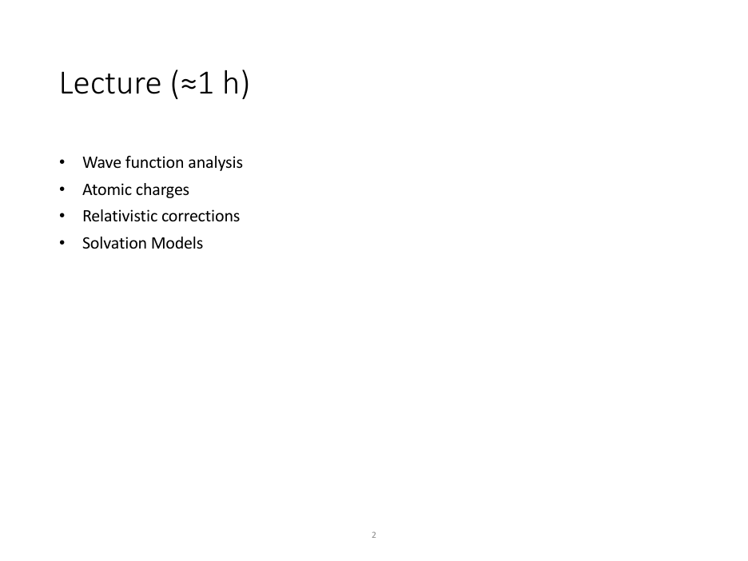
原文翻译
p1 ：相对论效应与溶剂化模型，第 6 讲，Liviu Ungur。
p2 ：课程（约 1 小时）：波函数分析 · 原子电荷 · 相对论修正 · 溶剂化模型
讲解 · 为什么"波函数分析"和"原子电荷"是两条
原子电荷是波函数分析里最常用的一种，但不是唯一一种。本讲的波函数分析还包括键级（p9）、静电势（p10）、轨道定域化（p12）。它们有一个共同点：都是把量子力学的结果"翻译"回化学家熟悉的语言 ——化学家说"这个氧带负电""这是一根双键""这里有一对孤对电子"，这些说法在薛定谔方程里都不存在，需要额外定义。
p3–4 电子密度分布与密度划分（回顾）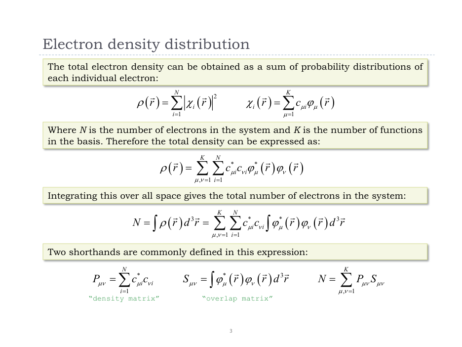
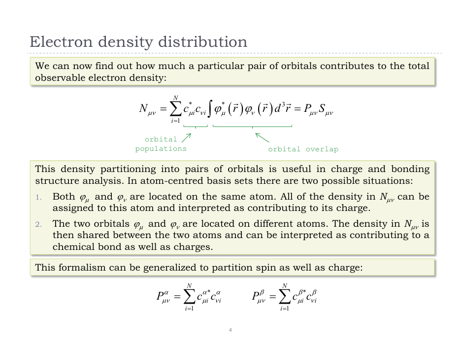
原文翻译
p3 ：总电子密度可作为每个电子概率分布之和得到：ρ (r ) = Σi χ i r )|²，χ i μ c μi φ μ N = Σμν P μν S μν P μν i c μi c νi S μν φ μ φ ν r （"重叠矩阵"）。
p4 ：一对基函数对总密度的贡献 N μν P μν S μν P μν α c α *c α P μν β c β *c β
这两页和第 5 讲 p4–p5 一字不差，完整的公式推导、每个符号的标注、H₂ 的数值例子都在第 5 讲 p4–p5 。这里只提醒三件后面几页要用的事：
要记住的 为什么后面要用 N = ΣP μν S μν PS )p5 的 Mulliken 电荷和 p6 的 Löwdin 电荷，都是"怎么把这个和拆给各个原子"的两种不同拆法 同原子块 vs 跨原子块 跨原子的那部分"该分给谁"没有唯一答案——这正是各种电荷定义吵架的地方 P α P β 用同样的拆法就得到每个原子的自旋布居
考点 N = ΣP μν S μν
p5 ★ Mulliken 布居与原子电荷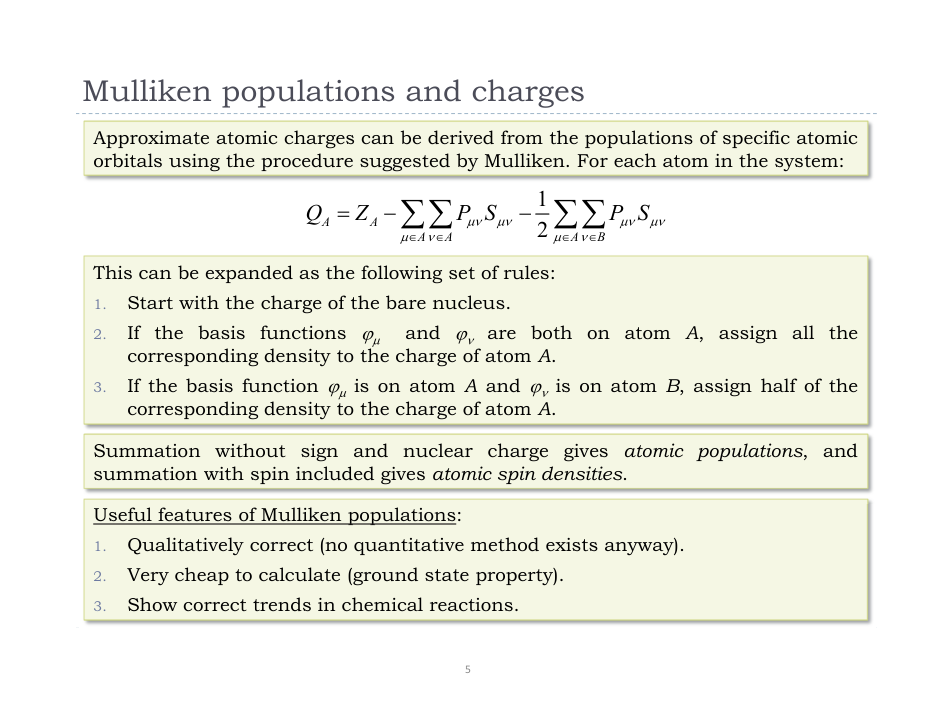
原文翻译
按照 Mulliken 提出的方法，可以由特定原子轨道的布居导出近似的原子电荷。对体系中每个原子：
Q A = Z A − Σμ ∈Aν ∈AP μν S μν μ ∈Aν ∈BP μν S μν
这可以展开成下面一组规则：
从裸原子核的电荷开始。
如果基函数 φ μ φ ν
如果基函数 φ μ φ ν 一半 算入原子 A 的电荷。
不带符号、不加核电荷的求和给出原子布居 ；包含自旋的求和给出原子自旋密度 。
Mulliken 布居的有用之处：① 定性正确（反正也不存在定量的方法）；② 计算非常便宜（基态性质）；③ 能显示化学反应中的正确趋势。
公式解析 · Mulliken 原子电荷
讲义原式
Q A = Z A − Σμ ∈Aν ∈AP μν S μν − ½ Σμ ∈Aν ∈BP μν S μν
符号 名称 含义 Q A 原子 A 的 Mulliken 电荷 正 = 缺电子，负 = 富电子。单位：电子电荷 e Z A 核电荷 规则 1 的"裸核电荷"。用赝势 (ECP) 时是价电子数 μ ∈ A"属于 A 的基函数" 以原子 A 为中心的所有基函数 ν ∈ B"属于其他原子的基函数" B 泛指所有不是 A 的原子 P μν S μν 布居矩阵元 基函数对 (μ ,ν ) 贡献的电子数（p4 的 N μν 第二项 净布居 规则 2：两个基函数都在 A 上 → 全给 A 第三项 重叠布居的分成 规则 3：一个在 A、一个在 B → 分一半给 A
⚠ 讲义这个式子的 ½ 用错了一次——用 H₂ 一验就知道
A 和 B 之间共享的电子（"重叠布居"）由两块 组成：μ ∈A,ν ∈B 的块，和 μ ∈B,ν ∈A 的块。因为 P 、S 都对称，这两块相等 ：
A–B 重叠布居 = Σμ ∈Aν ∈BPS + Σμ ∈Bν ∈APS = 2 Σμ ∈Aν ∈BPS
（p9 的键级公式 q AB = 2 ΣΣPS 正是这个量。）规则 3 说"给 A 一半"，一半就是 1 × Σμ ∈Aν ∈BPS ——前面不该再乘 ½。正确的式子是：
★ 正确形式
Q A = Z A − Σμ ∈Aν ∈AP μν S μν μ ∈Aν ∉AP μν S μν Z A − Σμ ∈APS )μμ
H₂ 验证（第 5 讲 p4 算过这个体系）
最小基组：P = 2c ²[1 1; 1 1] ，S = [1 S ; S 1] ，c ² = 1/[2(1+S )]。H₂ 是中性对称分子，每个 H 的电荷必须 是 0。
分到 HA 的电子数 Q A （取 S = 0.66）讲义原式 2c ²·1 + ½·2c ²·S = (1 + S /2)/(1+S ) ≈ 0.80 +0.20（两个 H 都带正电——中性分子凭空少了 0.4 个电子 ✘） 正确形式 2c ²·1 + 2c ²·S = (1+S )/(1+S ) = 1 0 ✔
所有 Mulliken 电荷加起来必须等于分子的总电荷——这是检查任何电荷公式最快的办法。Gaussian/ORCA 打印的 Mulliken 电荷用的是正确形式。
讲解 · 为什么"一半一半"是个问题
规则 3 的"平分"是 Mulliken 在 1955 年拍脑袋定的 （p6 第 3 条直说 "without any foundation"）。想想 HF 分子：F 的电负性远大于 H，H–F 之间共享的电子显然更靠近 F，平分会让 F 的负电荷被低估。
尽管如此，p5 列的三个优点是真的：
便宜 ：只需要 P 和 S ，SCF 结束时现成就有，不需要任何额外积分。趋势对 ：同一套基组下比较一系列分子，谁的 O 更负、反应中电荷往哪流，Mulliken 通常给得出。"反正也没有定量的方法" ：原子电荷不是可观测量 ——量子力学里没有"原子 A 的电荷算符"。所以不存在"正确的"原子电荷，只有不同的定义（p6–p8 就是另外几种）。
拓展 · 在输出里找到它们
输出 含义 Mulliken charges:每个原子的 Q A （Gaussian 默认打印） Mulliken charges with hydrogens summed into heavy atoms:把 H 的电荷加到它连着的重原子上，方便看"CH₃ 基团整体" Mulliken atomic spin densities:开壳层体系：把 P 换成 P α P β ORCA MULLIKEN ATOMIC CHARGES AND SPIN POPULATIONS 同上，两列并排；最后一行 Sum of atomic charges 可以直接用来做上面的"总和检查"
考点
Mulliken 电荷的三条规则；它只需要 P 和 S
为什么说原子电荷"没有定量的方法"（不是可观测量）
检查：所有原子电荷之和 = 分子总电荷
p6 Löwdin 布居与电荷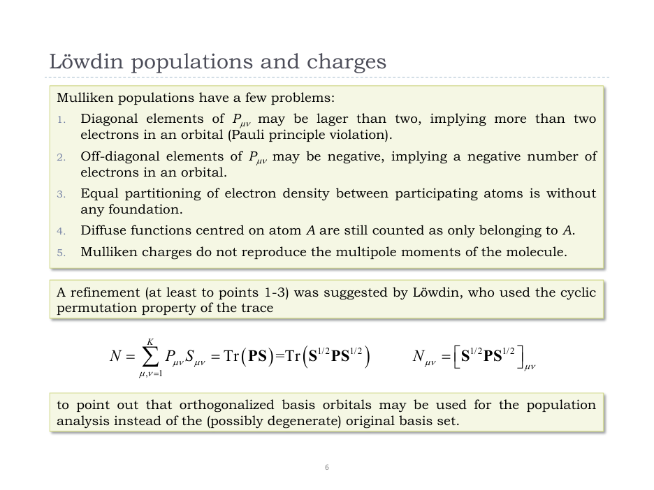
原文翻译
Mulliken 布居有几个问题：
P μν P μν 在参与的原子之间平分电子密度没有任何依据。
以原子 A 为中心的弥散函数仍然只被算作属于 A。
Mulliken 电荷不能重现分子的多极矩。
Löwdin 提出了一个改进（至少对第 1–3 点），他利用了迹的循环置换性质 ：
N = Σμ ,ν =1K P μν S μν PS ) = Tr(S 1/2 PS 1/2 ) ， N μν S 1/2 PS 1/2 ]μν
指出可以用正交化的 基函数代替（可能近线性相关的）原始基组来做布居分析。
公式解析 · 迹的循环性质与 Löwdin 布居
迹的循环置换
Tr(ABC ) = Tr(CAB ) = Tr(BCA )
★ Löwdin 布居
N = Tr(PS ) = Tr(S 1/2 P S 1/2 ) ⟹ Q A Löwdin = Z A − Σμ ∈AS 1/2 PS 1/2 ]μμ
符号 名称 含义 Tr 迹 矩阵对角元之和 S 1/2 重叠矩阵的平方根 满足 S 1/2 S 1/2 = S 的对称矩阵。算法：对角化 S = U s U T ，把每个本征值开根号，S 1/2 = U s 1/2 U T S 1/2 PS 1/2 正交基下的密度矩阵 就是把 P 变换到 Löwdin 正交化基 φ ′ = S −1/2 φ 上 （第 2 讲 p87 拓展里 Roothaan 方程正交化用的同一个 S −1/2 ）
为什么"循环置换"就能换一种拆法
把 S 拆成 S 1/2 S 1/2 ：Tr(PS ) = Tr(P S 1/2 S 1/2 )，再把最后一个 S 1/2 循环挪到最前面：= Tr(S 1/2 PS 1/2 )。
两个矩阵的迹（总电子数）相同，但对角元不同 ——所以把对角元按原子分组，得到的原子电荷不同。Mulliken 用的是 PS 的对角元，Löwdin 用的是 S 1/2 PS 1/2 的对角元。
Löwdin 修好了什么、没修好什么
Mulliken 的问题 Löwdin 原因 ① 布居 > 2 ✔ 修好 正交基下 S 1/2 PS 1/2 是半正定且本征值 ≤ 2（闭壳层）的矩阵，对角元落在 [0, 2] ② 负布居 ✔ 修好 同上 ③ 平分无依据 部分 不再需要"平分"——正交基里没有重叠项可分。但"S 1/2 对称地"分配本身也是一种约定 ④ 弥散函数归属 ✘ 正交化后的函数仍按原中心归属 ⑤ 多极矩 ✘ —
实际经验：Löwdin 电荷比 Mulliken 稍稳定，但仍然依赖基组。ORCA 默认同时打印两者（LOEWDIN ATOMIC CHARGES）。
考点
Mulliken 布居的五个问题（尤其 >2、负值、平分无依据）
Löwdin 的思路：用 Tr(PS ) = Tr(S 1/2 PS 1/2 )，在正交化基上做布居
p7 Bader 原子电荷（分子中的原子量子理论 QTAIM）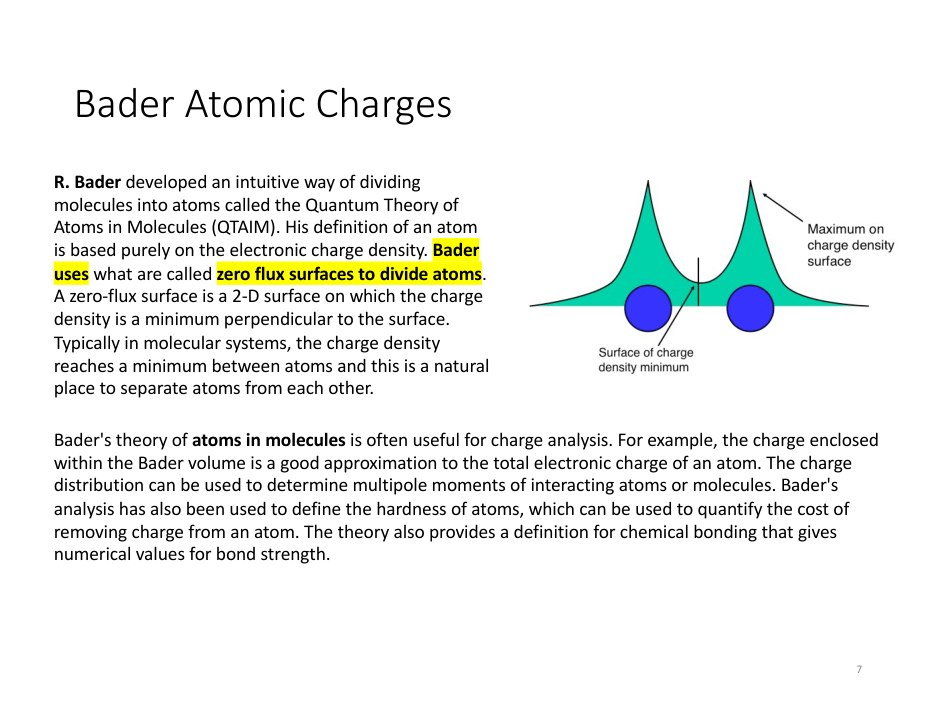
原文翻译
R. Bader 发展了一种把分子划分成原子的直观方法，称为分子中的原子量子理论 (QTAIM) 。他对原子的定义纯粹基于电子电荷密度 。Bader 用所谓的零通量面 来划分原子。零通量面是一个二维曲面，在该曲面上，电荷密度在垂直于曲面的方向上取极小值。在分子体系中，电荷密度通常在原子之间达到极小值，这是把原子彼此分开的自然位置。
Bader 的分子中原子理论常用于电荷分析。例如，Bader 体积内包含的电荷是原子总电子电荷的良好近似。电荷分布可以用来确定相互作用的原子或分子的多极矩。Bader 分析也被用来定义原子的硬度，可用于量化从原子上移走电荷的代价。该理论还提供了化学键的定义，给出键强度的数值。
公式解析 · 零通量面
★ Bader 原子边界的定义
∇ρ (r ) · n (r ) = 0 （对边界面上每一点）
符号 名称 含义 ∇ρ 密度梯度 一个矢量，指向密度增加最快的方向 n 曲面法向量 垂直于边界面的单位矢量 点积 = 0 "零通量" 梯度与法向垂直 = 没有梯度线穿过这张面 。所以每个原子是一个"盆地"：盆地里所有梯度线都流向同一个原子核
核 A 核 B
密度沿键轴的极小点
= 键临界点 (BCP)
零通量面从这里穿过
盆地 A：积分得 A 的电子数
盆地 B
ρ(r)
沿键轴方向的电子密度：两个核之间的最低点就是 Bader 切分原子的地方
讲解 · Bader 和 Mulliken 的根本区别
Mulliken / Löwdin Bader 分的是什么 基函数 空间（希尔伯特空间划分）真实三维空间 （实空间划分）依赖基组吗 强烈依赖 只依赖密度——基组足够大时收敛到唯一值 能用实验检验吗 不能 密度可以由 X 射线衍射测得，所以 Bader 分析也能对实验密度做 代价 几乎为零 需要在三维格点上找临界点、积分盆地
拓展 · QTAIM 的另外两个常用量（p7 最后一句"键强度的数值"）
量 怎么用 键临界点处的密度 ρ BCP 越大键越强。C–C 单键约 0.25 a.u.，氢键约 0.01–0.04 a.u. 键临界点处的拉普拉斯 ∇²ρ BCP < 0：电子在键区聚集 → 共享型（共价键）；> 0：电子从键区被抽走 → 闭壳层作用（离子键、氢键、范德华）
和你作业的关系 ：VASP（作业 4）算完固体后，最常用的电荷分析就是 Bader 电荷（Henkelman 组的 bader 程序读 CHGCAR）——因为平面波基组里根本没有"原子中心基函数"，Mulliken 做不了。分子体系可以用 Multiwfn 做 QTAIM。
考点
Bader 原子由零通量面 ∇ρ ·n = 0 定义；它只依赖电子密度
实空间划分 vs 基函数划分的区别
p8 Hirshfeld 原子电荷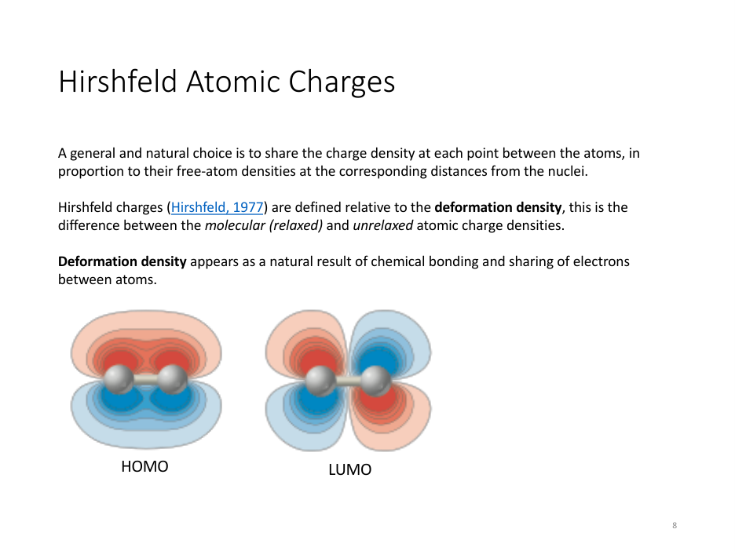
原文翻译
一种一般而自然的选择是：在每一点上，按各原子在对应核距离处的自由原子密度的比例，分配该点的电荷密度 。
Hirshfeld 电荷（Hirshfeld, 1977）是相对于形变密度 定义的，形变密度即分子的（弛豫的）密度与未弛豫的原子电荷密度之差。
形变密度是化学成键和原子间电子共享的自然结果。
（图：两张轨道等值线图，标注 HOMO 和 LUMO。）
公式解析 · Hirshfeld（"股东"）划分
★ Hirshfeld 权重与电荷
w A (r ) = ρ A 0 (r ) ⁄ ΣB ρ B 0 (r ) ； Q A = Z A − ∫ w A (r ) ρ (r ) dr
形变密度
Δρ (r ) = ρ 分子 (r ) − ΣA ρ A 0 (r )
符号 名称 含义 ρ A 0 (r )自由原子密度 把一个孤立的、球对称的中性 A 原子放在分子中 A 的位置上，它的密度（上标 0 = 未弛豫） ΣB ρ B 0 前分子密度 (promolecule) 所有自由原子密度简单叠加——"还没成键的假想分子" w A (r )权重（股份） 0 到 1 之间；所有原子的 w 在每一点加起来 = 1。A 在这一点"原本占多少股"，成键后就分走多少比例的真实密度 ρ (r )真实分子密度 SCF 算出来的 Δρ 形变密度 成键带来的密度重排：键区正值（电子聚集），孤立原子区域负值
讲解 · 为什么叫"股东 (stockholder)"划分
把每个空间点想成一家公司，各原子按"成键前在这里的持股比例"分红。离 A 核近的点，A 的自由原子密度大，A 占大股；两核之间的点，按两边自由原子密度的比例分。没有硬边界（不像 Bader 一刀切），而是平滑地"按比例共享"。
方法 特点 Hirshfeld 电荷数值偏小（因为自由原子作参考，偏向中性）；对基组不敏感；化学直觉好 CM5 在 Hirshfeld 基础上加经验修正，使电荷能较好地重现分子偶极矩——常用于力场参数化 Hirshfeld-I 迭代版：参考原子用带电离子密度，自洽到参考与结果一致；电荷更大、更"离子"
关于讲义这页的图
图下标的是 HOMO 和 LUMO，画的是两个分子轨道 的等值线（红蓝两色是轨道的正负相位），不是 文字里说的形变密度。它们只是示意"成键带来电子分布变化"。形变密度图通常是单一物理量的正负区（键区正、原子区负），而不是轨道的相位。
考点
Hirshfeld 的权重 w A = ρ A 0 /Σρ B 0 ；形变密度的定义
四种电荷的划分依据：Mulliken/Löwdin（基函数）、Bader（零通量面）、Hirshfeld（自由原子密度比例）
p9 Mulliken 键级（重叠布居）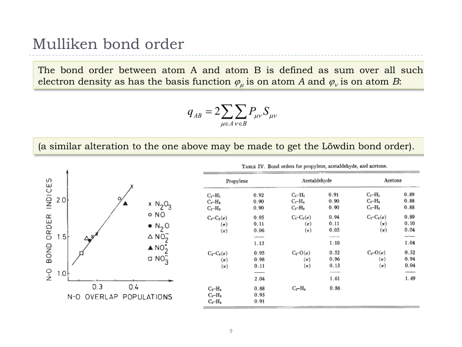
原文翻译
原子 A 和原子 B 之间的键级，定义为所有"基函数 φ μ φ ν
q AB = 2 Σμ ∈Aν ∈BP μν S μν
（对上面的式子做类似的修改就得到 Löwdin 键级。）
（左图：若干含 N–O 键的分子/离子，N–O 键级指数对 N–O 重叠布居作图，近似直线。右表：丙烯、乙醛、丙酮中各键的键级，按 σ、π 分量列出。）
公式解析
符号 名称 含义 q AB A–B 重叠布居 A 与 B 之间共享的电子数 因子 2 两块之和 Σμ ∈A,ν ∈Bμ ∈B,ν ∈A （p5 警告框里用到的就是这一点）正值 / 负值 — 正 ：A、B 之间电子聚集 → 成键；负 ：电子被推离键区 → 反键（例如两个孤对互相排斥）
讲解 · 从图和表里读出什么
左图 ：键级指数和重叠布居基本成正比——重叠布居大的 N–O 键（如 NO）键级高。所以即使重叠布居的绝对值（0.2–0.4）不像"1、2、3"那样好读，它的相对大小 是可靠的。 右表 ：丙烯的 C₂=C₃ 合计 2.04（σ 0.95 + π 0.98 + …），C₁–C₂ 1.13——正好对应"一根双键一根单键"；乙醛 C=O 1.61、丙酮 C=O 1.49，比 C=C 小，因为 C=O 键极性大，电子更多地归到 O 自己名下而不是"共享"。
拓展 · Mayer / Wiberg 键级：更接近"化学键级"的定义
B AB Mayer = Σμ ∈Aν ∈BPS )μν PS )νμ
它对 H₂ 给出 1、对乙烯 C=C 给出约 2、对 N₂ 给出约 3，和 Lewis 结构的键级吻合得好得多。ORCA 默认打印 Mayer bond orders，Gaussian 用 pop=nbo 可得 Wiberg 键级（在 NBO 正交基上算的同类量）。
考点
q AB = 2ΣΣP μν S μν
p10–11 ★ 分子静电势 (MEP / ESP)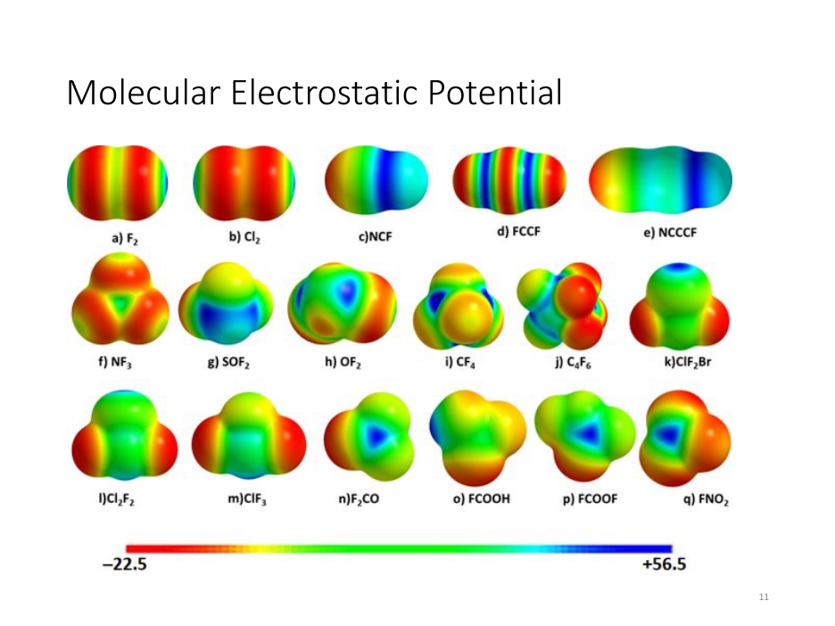
原文翻译
p10 ：分子静电势 (MEP) 可用于描述分子中价电子的电荷分布 。
ϕ (x ₁,y ₁,z ₁) = Σi q i ε ₀r i ρ (x ,y ,z )/(4πε ₀r e x dy dz （核项为正；电子项为负）
左图：HF 分子的恒定电子密度曲面网格。氟原子为绿色，网格上的颜色表示分子静电势的值。红、蓝分别对应负值和正值。右图：一个杂环分子映射了 MEP 的等密度面。
p11 ：17 个含卤素小分子（F₂、Cl₂、NCF、FCCF、NCCCF、NF₃、SOF₂、OF₂、CF₄、C₄F₆、ClF₂Br、Cl₂F₂、ClF₃、F₂CO、FCOOH、FCOOF、FNO₂）的 MEP 图，色标 −22.5（红）到 +56.5（蓝）。
公式解析 · 分子静电势
★ 分子静电势（原子单位写法）
ϕ (r ) = ΣA Z A ⁄ |R A − r | − ∫ ρ (r ′) ⁄ |r ′ − r | dr ′
符号 名称 含义 ϕ (r )静电势 在点 r 放一个单位正电荷 ，它感受到的静电势能。讲义把探测点写成 (x ₁,y ₁,z ₁) q i Z A )核电荷 讲义里 q i i 个原子核的电荷，r i ρ (r ′)电子密度 电子云被当成连续电荷分布；r e 4πε ₀ 库仑常数 SI 单位下出现，原子单位下为 1 正 / 负 — 核项正（排斥正电荷）；电子项负（吸引正电荷）。哪边赢，那一点就是正或负
和 Mulliken 电荷的关键区别：静电势是可观测量
ϕ (r ) 只依赖真实的电子密度和核的位置，是一个物理上确定 的量（原则上可由 X 射线衍射密度得到），不存在"怎么划分"的任意性。所以分析分子间作用、反应位点时，静电势比原子电荷可靠得多。
讲解 · 怎么读 MEP 图
颜色 静电势 化学含义 红 负 电子富集：孤对电子、π 电子云、阴离子端。亲电试剂、质子、氢键给体（H）会往这里去 绿/黄 接近 0 非极性区（C–H 骨架） 蓝 正 缺电子：酸性 H、阳离子中心、σ-hole。亲核试剂、氢键受体（孤对）会往这里去
p10 左图 HF 分子 ：F 端红（F 的孤对），H 端蓝（H 被 F 拉走电子）——这正是 HF 作为氢键给体的原因。
拓展 · p11 为什么全是含卤素分子：σ-hole 与卤键
仔细看 p11 的 Cl₂、NCF、ClF₃ 等：卤素原子沿键轴延长线的最外端出现一块正电（蓝/绿）区 ，而侧面是负电（红）的一圈。
原因：卤素 X 用一个 p 轨道和相邻原子成 σ 键，这个 p 轨道在"背对键"的一端电子被拉走，形成一个正电帽子，叫 σ-hole 。它能吸引路易斯碱（N、O 的孤对），形成 卤键 R–X···:B，方向性很强（接近 180°）。
这个现象用原子电荷完全看不出来 ——F、Cl 的 Mulliken 电荷整体都是负的，但它的电子分布是各向异性的。这就是"静电势比点电荷描述更丰富"的最好例子，也是现代力场要在卤素上加"虚拟正电荷点"的原因。
拓展 · 在软件里画 MEP
Gaussian：算完后 cubegen 生成密度 cube 和静电势 cube，在 GaussView 里 Results → Surfaces → 用"密度面 + 映射 ESP"。等值面通常取 ρ = 0.001 或 0.002 a.u.（大致代表分子的范德华表面）。Multiwfn 可以直接定量分析表面上静电势的极大/极小点（σ-hole 的强度就这么量）。
考点
MEP 公式：核项（正）+ 电子项（负）；每个符号的含义
红=负=富电子，蓝=正=缺电子；MEP 是可观测量而原子电荷不是
p12–13 ★ 分子轨道与轨道定域化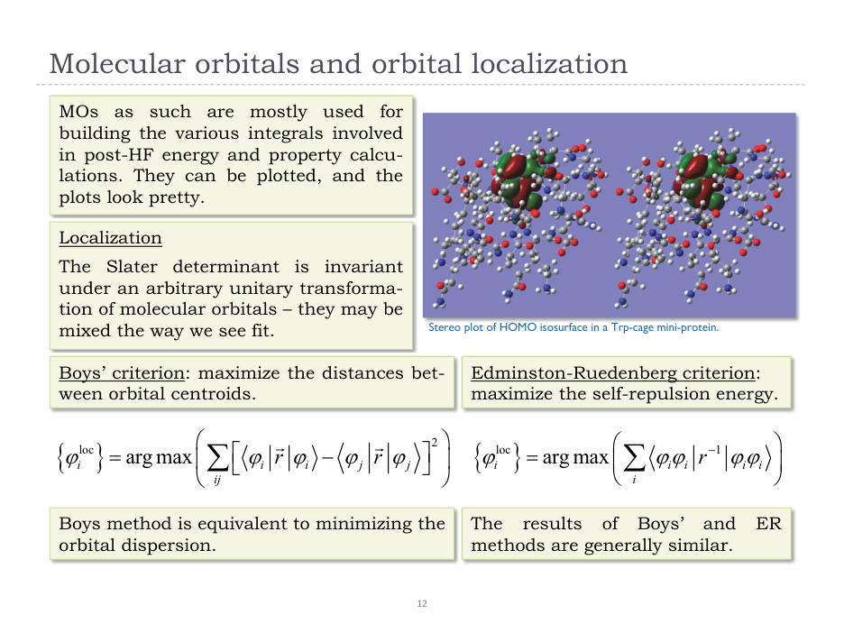
原文翻译（p12）
分子轨道本身主要用于构造后 HF 能量和性质计算中的各种积分。它们可以被画出来，画出来很好看。（图：Trp-cage 迷你蛋白中 HOMO 等值面的立体图。）
定域化 ：Slater 行列式在分子轨道的任意幺正变换 下不变——轨道可以按我们认为合适的方式混合。
Boys 判据 ：使轨道质心之间的距离最大：{φ i loc } = arg max( Σij φ i r |φ i φ j r |φ j
Edmiston–Ruedenberg 判据 ：使自排斥能最大：{φ i loc } = arg max( Σi φ i φ i r ⁻¹|φ i φ i
原文翻译（p13）
注意 ：虽然定域轨道仍然给出同一个 Slater 行列式，但它们不再是 SCF 算符的本征函数 ——不存在"定域轨道的能量"这种东西。
（左图：香蕉键 ——一种常见的轨道定域化假象。）
Pipek–Mezey 判据 ：使所有原子上密度平方之和最大：{φ i loc } = arg max( Σn ρ n
PM 定域化在 π 键体系（如乙烯）中保留了 σ 轨道与 π 轨道的分离 （见右表：正则 MO、Pipek–Mezey LMO、Boys LMO 的对比）。
公式解析 · 三种定域化判据
符号 名称 含义 arg max(…) "使……最大的那个自变量" 在所有幺正变换中，找出让括号里的量最大的那一组轨道 {φ i loc } 定域轨道集 上标 loc = localized ⟨φ i r |φ i 轨道质心 轨道 i 的电子"平均在哪"（一个三维位置矢量） ⟨φ i φ i r ⁻¹|φ i φ i 自排斥能 = 第 2 讲的 J ii i 的电荷云和自己的排斥。轨道越紧凑，这个值越大 ρ n 轨道在原子 n 上的布居 PM 里通常用 Mulliken 布居。平方和大 = 轨道集中在少数原子上
判据 最大化的量 直观理解 Boys 轨道质心间距离平方和 让各轨道彼此离得最远 （等价于每个轨道自身最紧凑） Edmiston–Ruedenberg ΣJ ii 让每个轨道自己最紧凑 （电荷越集中自排斥越大） Pipek–Mezey Σ（原子布居）² 让每个轨道落在尽可能少的原子上
讲解 · 为什么"可以随便混"
第 3 讲 p46 讲过：Slater 行列式在占据轨道的任意幺正变换下只差一个相位，总能量、电子密度全都不变。 SCF 给出的正则轨道只是其中一种选择（让 Fock 矩阵对角），往往离域在整个分子上——比如苯的 π 轨道、甲烷的 a ₁ + 3 个 t ₂ 轨道。
定域化就是在这个自由度里挑一组"化学家看得懂"的：甲烷变成 4 根等价的 C–H 键轨道，水变成 2 根 O–H 键 + 2 个孤对。
p13 的注意事项：定域轨道没有轨道能
定域轨道不是 Fock 算符的本征函数，所以 Fock 矩阵在定域基下不是对角的 。"C–H 键轨道的能量"没有意义——Koopmans 定理（第 3 讲 p47）和光电子能谱只对应正则 轨道 。甲烷的光电子谱有两个峰（a ₁ 和 t ₂），而不是一个（4 根等价 C–H 键）。
讲解 · 香蕉键与 σ/π 分离
Pipek–Mezey：σ + π
σ π(+) π(−)
一根 σ 键 + 一根 π 键（π 有正负两瓣）
Boys / ER：两根"香蕉键"
τ₁ τ₂
两根等价的弯曲键（Pauling 的 τ 键模型）
C=C 双键的两种定域描述——两者给出完全相同的总波函数和能量
Boys/ER 追求"每个轨道最紧凑"，而 σ+π 中的 π 轨道分成上下两瓣、不够紧凑，所以它们把 σ 和 π 混合成两根弯曲的等价键。讲义称之为"假象 (artefact)"——因为它和化学家习惯的 σ/π 图像不一致；但严格说它和 σ+π 描述在物理上完全等价 （幺正变换的两种选择）。PM 因为最大化的是原子布居，不追求空间紧凑，所以保留了 σ/π 分离，更适合讨论共轭体系。
考点
为什么可以定域化（行列式在幺正变换下不变）；定域轨道没有轨道能
Boys、ER、PM 三种判据各最大化什么；香蕉键是怎么来的
p14 用定域轨道做 HF 与后 HF 计算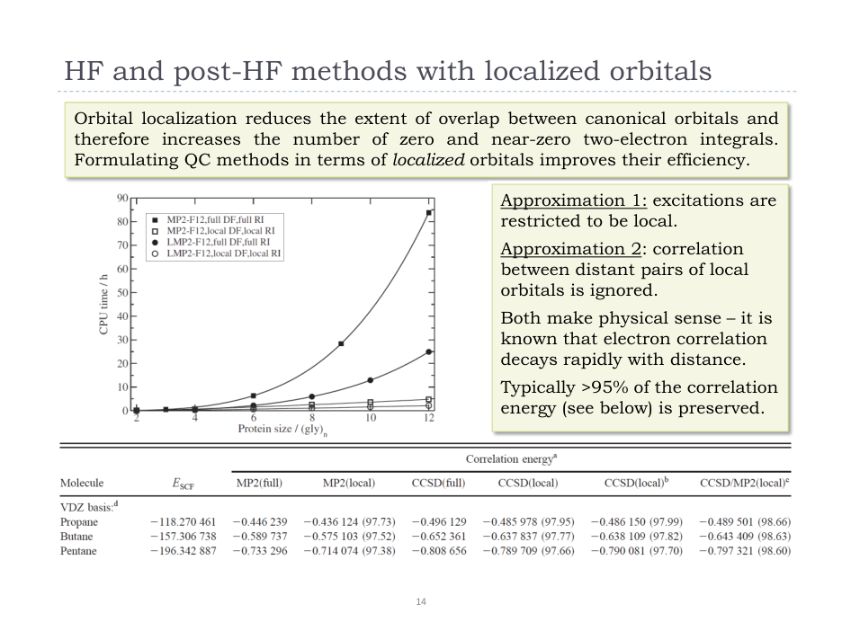
原文翻译
轨道定域化减少了正则轨道之间的重叠范围，因而增加了为零和接近零的双电子积分的数目。用定域轨道来表述量子化学方法可以提高效率。
近似 1 ：激发被限制为局域的。
近似 2 ：忽略相距较远的定域轨道对之间的相关。
两者在物理上都合理——已知电子相关随距离迅速衰减。通常能保留 >95% 的相关能（见下表）。
（左图：MP2-F12 与局域 LMP2-F12 的 CPU 时间随蛋白质（甘氨酸链）长度的变化；下表：丙烷、丁烷、戊烷在 VDZ 基组下完整与局域 MP2、CCSD 的相关能及保留百分比。）
讲解 · 为什么局域化能让高级方法变便宜
物理事实：动态相关是短程的
第 4 讲 p4 讲过：动态相关是电子"瞬时互相躲开"。两个相距 10 Å 的电子对之间几乎没有这种关联 ——色散能 ∝ 1/R ⁶，衰减极快。
用正则轨道时这件事看不出来（每个轨道都铺满整个分子，任何两个轨道都"在一起"）；换成定域轨道后，"哪些轨道对离得远"一目了然，远的直接扔掉。
从表里读 含义 MP2(local) 97.4–97.7% 局域 MP2 保留约 97.5% 的相关能 CCSD(local) 97.7–98.0% 局域 CCSD 类似 左图：MP2-F12 曲线陡升，LMP2 平缓 完整方法随体系增大按高次幂增长，局域方法接近线性
拓展 · 这就是 ORCA 的 DLPNO-CCSD(T)
第 3 讲 p6 拓展提到过：DLPNO = Domain-based Local Pair Natural Orbital。它在定域轨道基础上再用"对天然轨道 (PNO)"压缩虚轨道空间，让 CCSD(T) 的标度从 O(N ⁷) 降到接近线性，保留约 99.9% 的相关能。100+ 原子的 CCSD(T) 单点能因此成为日常操作。ORCA 写法：! DLPNO-CCSD(T) def2-TZVP def2-TZVP/C。
这是第 1 讲 p21 那句"进步靠算法而不是硬件"最好的例子。
考点
局域相关方法的两个近似；为什么物理上合理（相关随距离快速衰减）
p15 ★ 相对论效应：为什么重元素需要修正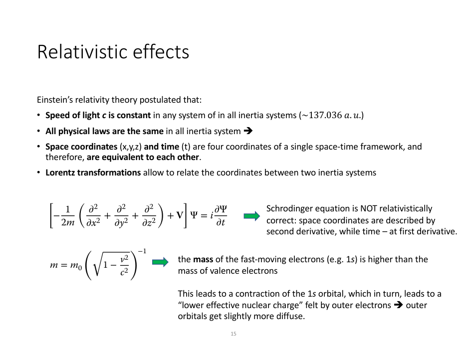
原文翻译
Einstein 的相对论假设：
光速 c 在所有惯性系中是常数（约 137.036 a.u.）
所有物理定律在所有惯性系中相同
空间坐标 (x ,y ,z ) 和时间 (t ) 是同一个时空框架的四个坐标，因此彼此等价
Lorentz 变换把两个惯性系之间的坐标联系起来
[−(1/2m )(∂²/∂x ² + ∂²/∂y ² + ∂²/∂z ²) + V ]Ψ = i ∂Ψ/∂t ——薛定谔方程在相对论意义下是不正确的 ：空间坐标以二阶导数出现，而时间以一阶导数出现。
m = m ₀(√(1 − v ²/c ²))⁻¹ ——快速运动的电子（如 1s）的质量比价电子的质量大。
这导致 1s 轨道收缩，进而使外层电子感受到"更低的有效核电荷" → 外层轨道变得稍微更弥散。
公式解析 · 相对论质量
★ 相对论质量增加
m = m 0 ⁄ √(1 − v ²/c ²) = γ m 0
符号 名称 含义 m 0 静止质量 电子静止时的质量（原子单位下 = 1） v 电子速度 1s 电子的平均速度 ≈ Z a.u. （由玻尔模型 v = Z /n 得到）c 光速 原子单位下 c = 137.036（= 1/α ，α 是精细结构常数） γ Lorentz 因子 ≥ 1；速度越接近光速越大
讲解 · 算一算：什么时候相对论才重要
元素 Z 1s 速度 v /c ≈ Z /137 γ 1s 半径收缩（∝ 1/m ） C 6 0.044 1.001 0.1%——完全可忽略 Cu 29 0.21 1.02 2% Ag 47 0.34 1.07 6% Au 79 0.58 1.22 约 18% ——必须考虑Hg 80 0.58 1.23 约 19%
为什么质量大半径就小 ：玻尔半径 a ₀ = 4πε ₀ħ ²/(me ²) ∝ 1/m 。电子"变重"，就被拉得离核更近。
为什么薛定谔方程"不对" ：相对论要求时间和空间地位平等，方程在 Lorentz 变换下形式不变。薛定谔方程对空间求二阶导、对时间求一阶导，两者地位不平等，所以它只能是低速近似。 Dirac 的做法（p16）是让时间和空间都 是一阶导数。
⚠ 讲义最后一句只说对了一半：外层 s 轨道也收缩，变弥散的是 d、f
相对论效应分"直接"和"间接"两种，方向相反：
效应 作用在谁身上 结果 直接效应 所有 s 和 p1/2 轨道 ，包括价层的 6s收缩、能量降低 。价层 6s 也在核附近有"穿透"部分（第 2 讲 p52：只有 s 电子能到达原子核），那里速度很高，所以同样变重收缩间接效应 d 和 f 轨道 扩张、能量升高 。收缩了的 s/p 电子把核屏蔽得更好，d/f 电子（离心势垒大，到不了核附近）感受到的有效核电荷变小——这正是讲义说的"外层轨道变弥散"
所以讲义那句话对 5d、4f 成立，对 6s 不成立。考试问"相对论效应对价层轨道的影响"，要把两种都写出来。
拓展 · 相对论效应在化学里的著名后果
现象 相对论解释 金是黄色的 （银是白色的）6s 收缩下降、5d 扩张上升 → 5d→6s 跃迁能从银的约 3.7 eV（紫外）降到金的约 2.4 eV，吸收蓝光，反射出黄色。非相对论计算的金是银白色的 汞在室温是液体 6s² 被收缩得非常紧、很难参与金属键 → Hg 原子之间结合很弱，熔点 −39 °C（相邻的 Au 1064 °C） 金的电子亲和能很大 ，能形成 Cs⁺Au⁻收缩的 6s 轨道能量低，容易接受一个电子 惰性电子对效应 （Tl⁺、Pb²⁺、Bi³⁺ 稳定）6s² 收缩稳定，不愿参与成键 铅酸蓄电池电压 约 2.1 V 中有约 1.7 V 来自相对论效应（PbO₂ 的稳定性）；非相对论的"铅酸电池"几乎不能用
计算上怎么处理 ：最常用、最便宜的是相对论赝势 (ECP) ——把内层电子换成一个拟合了相对论全电子计算的势（def2 系列对 Rb 之后的元素自动带 ECP，Gaussian 的 LANL2DZ、SDD 也是）。需要全电子时用 DKH 或 ZORA（p18，第 5 讲 p38 建议 6）。
考点
为什么薛定谔方程不是相对论性的（时间一阶、空间二阶）
相对论质量 m = γm ₀；1s 速度 ≈ Z a.u.，c = 137 a.u.；为什么重元素才重要
直接效应（s、p 收缩）vs 间接效应（d、f 扩张）
p16 Dirac 方程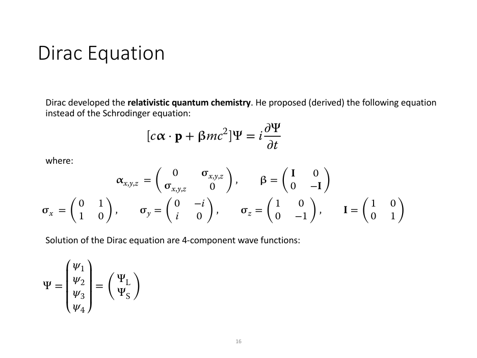
原文翻译
Dirac 发展了相对论量子化学 。他提出（推导）了下面的方程来代替薛定谔方程：
[c α ·p + β mc ²]Ψ = i ∂Ψ/∂t
其中：α x ,y ,z σ x ,y ,z σ x ,y ,z β = (I 0; 0 −I )
σ x σ y i ; i 0)，σ z I = (1 0; 0 1)
Dirac 方程的解是四分量 波函数：Ψ = (ψ ₁, ψ ₂, ψ ₃, ψ ₄)T = (ΨL , ΨS )T
公式解析 · Dirac 方程（自由粒子形式）
★ Dirac 方程（原子单位，ħ = 1）
[ c α ·p β mc ²i ∂Ψ/∂t
符号 名称 含义 p 动量算符 = −i ∇（原子单位），一阶 导数——和右边时间的一阶导数地位平等 c α ·p 动能项 = c (α x p x α y p y α z p z α x ,y ,z Dirac 矩阵 三个 4×4 矩阵，每个由 2×2 的 Pauli 矩阵拼成（对角块为 0） β mc ²静止能量项 mc ² 是电子的静止能量（Einstein 质能关系）β Dirac 矩阵 4×4 对角矩阵 diag(1,1,−1,−1) σ x ,y ,z Pauli 矩阵 2×2 矩阵。(ħ /2)σ 就是电子的自旋算符 ŝ ——自旋在这里自动出现 I 2×2 单位矩阵 — ΨL , ΨS 大分量 / 小分量 各是两分量的"旋量" (spinor)。L = Large，S = Small
讲解 · 三件从 Dirac 方程里"自动"冒出来的事
① 为什么必须用矩阵
要让时间、空间都是一阶导，同时能量-动量关系还要满足相对论的 E ² = p ²c ² + m ²c ⁴，Dirac 发现系数 α 、β 必须满足 α i β ² = 1 且两两反对易 （α i β + βα i 最小的能满足这些条件的对象是 4×4 矩阵 ——所以波函数必须有 4 个分量。
② 自旋自动出现
第 2 讲 p63 的自旋是"手工塞进"非相对论理论的。在 Dirac 方程里，4 个分量中有 2 个对应自旋向上/向下，Pauli 矩阵自然出现——自旋 ½ 和 g ≈ 2 都是相对论的必然结果。 （第 2 讲 p63 的警告框提到过这一点。）
③ 大分量与小分量
对束缚在原子里的电子，小分量大约是大分量的 v /(2c ) 倍：
ΨS ≈ (σ ·p )/(2mc ) · ΨL ⟹ |ΨS |/|ΨL | ~ Z /(2 × 137)
H 原子：约 1/274，可以忽略——小分量扔掉，就回到了（带自旋的）薛定谔方程。Au 的 1s：约 0.3，不能忽略。p18 的所有近似方法本质上都是"想办法把小分量消掉、只算大分量，同时把它的影响近似保留下来"。
考点
写出 Dirac 方程；它为什么是一阶的；为什么波函数有 4 个分量
大分量 / 小分量；自旋是 Dirac 方程的自然结果
p17 Dirac 方程的能谱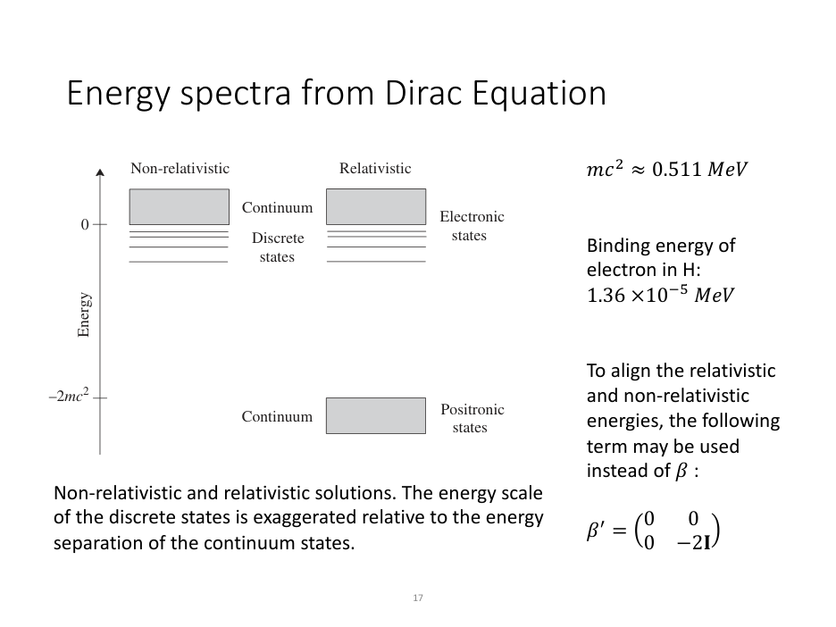
原文翻译
（图：非相对论与相对论的解。非相对论：0 以上为连续态，0 以下为分立态。相对论：上方为电子态（连续态 + 分立态），下方 −2mc ² 以下还有一个正电子态 连续区。分立态的能量尺度相对于连续态之间的能隙被夸大了。）
mc ² ≈ 0.511 MeV；H 中电子的结合能：1.36 × 10⁻⁵ MeV。
为了把相对论能量和非相对论能量对齐，可以用下面这一项代替 β ：β ′ = (0 0; 0 −2I )
讲解 · 这张图的三个要点
要点 解释 多了一整片"负能态" Dirac 方程除了电子态，还给出能量低于 −mc ² 的解——Dirac 把它解释为正电子 （反物质，1932 年被实验发现）。电子态和正电子态之间隔着 2mc ² ≈ 1.02 MeV 的能隙 尺度差异悬殊 mc ² = 511 000 eV，而 H 原子结合能只有 13.6 eVβ ′ 的作用β ′ = β − I = diag(0,0,−2,−2)。等于把整个能谱往下挪 mc ²，使电子的静止能量变成 0，和非相对论的能量零点一致（p19 的算符里用的就是 β ′）
拓展 · 负能态给四分量计算带来的麻烦："变分塌缩"
第 3 讲的变分原理说能量有下界、最小化能量就能找到基态。但 Dirac 哈密顿量没有下界 ——下面有一整片负能态。 如果直接最小化，电子会一路"掉进"正电子海，得到毫无意义的结果。
实际四分量程序用两个办法解决：① 把问题改成"在电子态里找最低的"（极小-极大原理）；② 小分量的基函数必须和大分量满足动能平衡 （kinetic balance：小分量基 ∝ σ ·p × 大分量基），否则连 H 原子都会算错。所以四分量计算比非相对论贵得多、也麻烦得多——这就是 p18 的二分量/一分量近似存在的原因。
考点
Dirac 能谱：电子态 + 正电子态，间隔 2mc ²；化学能量尺度远小于 mc ²
p18 ★ 从 Dirac 到二分量：标量相对论与自旋-轨道耦合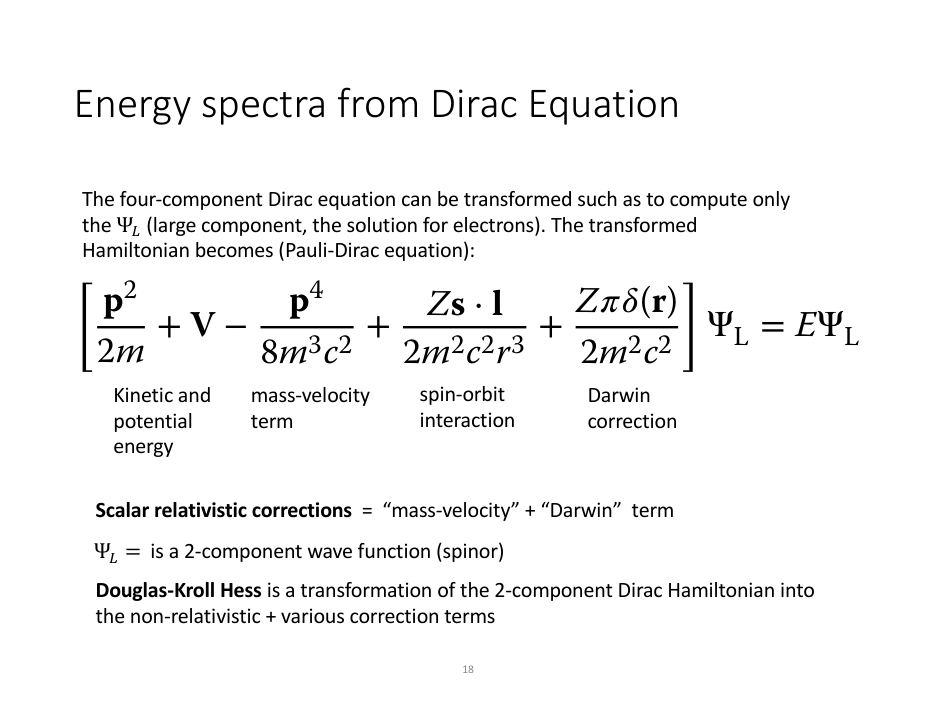
原文翻译
四分量 Dirac 方程可以变换成只计算 ΨL （大分量，即电子的解）的形式。变换后的哈密顿量为（Pauli–Dirac 方程）：
[ p ²/2m + V − p ⁴/(8m ³c ²) + Z s ·l /(2m ²c ²r ³) + Z πδ (r )/(2m ²c ²) ] ΨL = E ΨL
（动能与势能 · 质量-速度项 · 自旋-轨道相互作用 · Darwin 修正）
标量相对论修正 = "质量-速度"项 + "Darwin"项
ΨL 是一个两分量波函数（旋量）。
Douglas–Kroll–Hess (DKH) 是把二分量 Dirac 哈密顿量变换为非相对论项 + 各种修正项的一种变换。
公式解析 · Pauli 哈密顿量（逐项）
★ Pauli（Breit–Pauli 单电子）哈密顿量
Ĥ = p ²/2m + V − p ⁴/(8m ³c ²) + Z s ·l ⁄ (2m ²c ²r ³) + Z π δ (r ) ⁄ (2m ²c ²)
项 名称 含义 p ²/2m + V 非相对论部分 就是第 2 讲的薛定谔哈密顿量 −p ⁴/(8m ³c ²) 质量-速度项 相对论动能展开的第一个修正 （见下）。永远为负 → 降低能量；对速度最快的电子（s 电子、内层电子）影响最大Z s ·l /(2m ²c ²r ³)自旋-轨道耦合 (SOC) 电子自旋 s 与自身轨道角动量 l 的耦合。l = 0（s 轨道）时为零；把 p 劈裂成 p1/2 和 p3/2 Z πδ (r )/(2m ²c ²)Darwin 项 δ (r ) 只在原子核处非零 → 只影响 s 电子 （只有 s 电子在核处有密度）。永远为正 → 升高能量s , l 自旋、轨道角动量 第 2 讲 p51、p63 δ (r )Dirac δ 函数 第 5 讲 p8 ΨL 两分量旋量 每一分量对应一个自旋方向
质量-速度项从哪来：把相对论动能展开
相对论能量 E = √(p ²c ² + m ²c ⁴)，用 √(1+x ) ≈ 1 + x /2 − x ²/8 展开（x = p ²/m ²c ²）：
E = mc ² √(1 + p ²/m ²c ²) ≈ mc ² + p ²/2m − p ⁴/8m ³c ² + ⋯
第一项是静止能量（被 β ′ 挪走），第二项是我们熟悉的非相对论动能，第三项就是质量-速度修正 ——它对应 p15 说的"快速电子变重"。
讲解 · "标量相对论"与"自旋-轨道"为什么要分开
标量相对论（质量-速度 + Darwin） 自旋-轨道耦合 含不含自旋 不含 ——只是给哈密顿量加一个修正势含 s ·l 波函数 仍可用普通实轨道、α/β 分开（一分量 ，p22 的 "1C"） α 和 β 被混在一起，必须用复数二分量 旋量（"2C"） 代价 ≈ 非相对论计算 贵好几倍 影响 轨道收缩/扩张、键长、结合能——p15 的所有化学后果主要来自这里 能级劈裂、磷光、系间窜越、重元素磁性 常用方法 DKH2 （Gaussian int=DKH，ORCA ! DKH2）、ZORA （ORCA ! ZORA）、相对论 ECP SO-DKH、SO-ZORA；OpenMOLCAS 的 SO-RASSI（先做无 SOC 的 CASSCF，再在态之间加 SOC）
拓展 · 为什么不直接用 Pauli 哈密顿量，而要 DKH / ZORA
Pauli 哈密顿量是按 1/c ² 展开得到的。在原子核附近 V → −∞，展开参数不再小，展开失效；而且 −p ⁴ 项没有下界，变分计算会塌缩。 所以 Pauli 形式只能当一阶微扰用。
方法 思路 DKH 用一系列幺正变换把四分量 Dirac 哈密顿量逐阶"块对角化"成电子部分和正电子部分，按外势 的阶数展开（而不是按 1/c ²），在核附近也不发散。DKH2 = 二阶，最常用 ZORA "零阶正规近似"：按 E /(2mc ² − V ) 展开，核附近 V 很负时分母很大、展开反而更好。ADF、ORCA 常用 X2C "精确二分量"：一步矩阵变换精确地解耦单电子 Dirac 矩阵，近年越来越流行
用 DKH/ZORA 时必须换基组
标准基组的内层收缩系数是按非相对论原子拟合的，不适合描述相对论收缩后的内层。要用专门的相对论收缩基组 ：ORCA 用 DKH-def2-TZVP 或 ZORA-def2-TZVP、SARC 系列；Gaussian 用 cc-pVnZ-DK。混用会引入不可控误差。
考点
Pauli 哈密顿量的四项：非相对论、质量-速度、自旋-轨道、Darwin；各自的物理意义与符号
标量相对论 = 质量-速度 + Darwin；自旋-轨道单独算
为什么 Darwin 项只影响 s 电子；为什么 SOC 对 s 电子为零
p19 相对论的电子间相互作用：Gaunt 与 Breit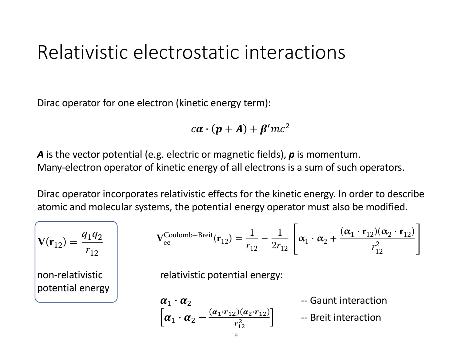
原文翻译
单电子的 Dirac 算符（动能项）：c α ·(p + A ) + β ′mc ²
A 是矢势（例如电场或磁场），p 是动量。所有电子的多电子动能算符是这些算符之和。
Dirac 算符包含了动能的相对论效应。为了描述原子和分子体系，势能算符也必须修改。
非相对论势能：V (r ₁₂) = q ₁q ₂/r ₁₂
相对论势能（Coulomb–Breit）：V ee Coulomb−Breit (r ₁₂) = 1/r ₁₂ − (1/2r ₁₂)[α ₁·α ₂ + (α ₁·r ₁₂)(α ₂·r ₁₂)/r ₁₂²]
α ₁·α ₂ ——Gaunt 相互作用；α ₁·α ₂ − (α ₁·r ₁₂)(α ₂·r ₁₂)/r ₁₂² ——Breit 相互作用
公式解析 · Coulomb–Breit 电子排斥
★ 相对论电子-电子相互作用
V ee = 1/r 12 − (1/2r 12 )[ α 1 ·α 2 + (α 1 ·r 12 )(α 2 ·r 12 ) ⁄ r 12 ² ]
符号 名称 含义 1/r 12 瞬时库仑排斥 第 2 讲的老朋友。它假设相互作用瞬间 传递——违反相对论（信号速度不能超过 c ） α 1 , α 2 电子 1、2 的 Dirac 矩阵 c α 在 Dirac 理论里就是电子的速度 算符α 1 ·α 2 项Gaunt 项 两个运动电子的电流之间的磁相互作用 （两根通电导线互相吸引/排斥的量子版） 含 r 12 的项 推迟修正 电磁相互作用以有限速度 c 传播带来的修正。Gaunt + 推迟 = Breit A 矢势 描述外加电磁场；p + A 是"最小耦合"
大小 ：Breit 项约为库仑项的 (v /c )² 倍。对价层化学性质影响很小，主要影响重元素内层 电子能级和精细结构。大多数四分量程序只用"Dirac–Coulomb"哈密顿量（不含 Breit），需要时再微扰地加 Gaunt/Breit。
考点
Coulomb–Breit 相互作用：Gaunt 项（电流间磁作用）+ 推迟项；它们修正了"瞬时库仑作用"
p20–21 相对论修正在哈密顿量中产生的全部项（Breit–Pauli 哈密顿量）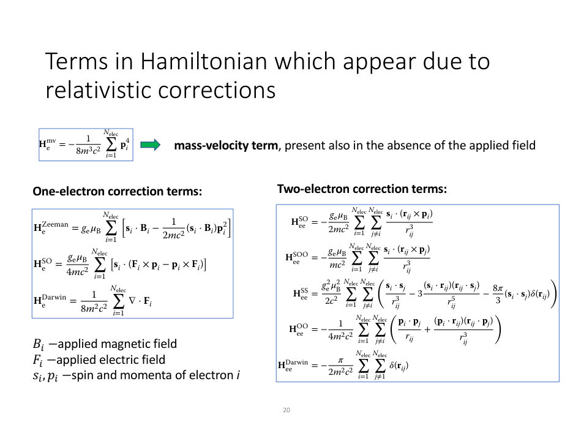
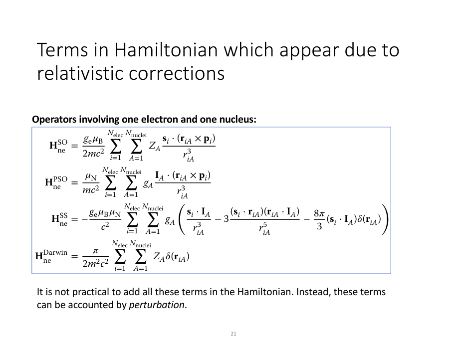
原文翻译
p20 单电子修正项 ：
H mv = −(1/8m ³c ²)Σi p i H Zeeman = g e μ B Σi s i B i mc ²)(s i B i p i H SO = (g e μ B /4mc ²)Σi s i F i p i p i F i H Darwin = (1/8m ²c ²)Σi F i
双电子修正项 ：H SO ee （自旋-同轨道）、H SOO ee （自旋-他轨道）、H SS ee （自旋-自旋）、H OO ee （轨道-轨道）、H Darwin ee = −(π/2m ²c ²)ΣΣδ (r ij
B i F i s i p i i 的自旋和动量
p21 涉及一个电子和一个原子核的算符 ：H SO ne （核电场中的自旋-轨道）、H PSO ne （顺磁自旋-轨道，含核自旋 I A ）、H SS ne （电子自旋-核自旋）、H Darwin ne = (π/2m ²c ²)ΣΣZ A δ (r iA
把所有这些项都加进哈密顿量是不现实的。这些项可以用微扰的方式计入。
公式解析 · 这些式子里反复出现的符号
符号 名称 含义 g e 电子 g 因子 ≈ 2.0023（Dirac 给出 2，QED 修正 0.0023） μ B Bohr 磁子 = eħ /2m e ，电子磁矩的自然单位 μ N 核磁子 = eħ /2m p ，比 μ B 小 1836 倍 g A , I A 核 g 因子、核自旋 原子核 A 的磁性质（¹H: I = ½） s i p i 电子自旋、动量 — F i B i 电子 i 处的电场、磁场 包括核产生的场和外加场 r ij r iA 电子-电子、电子-核距离矢量 — 上标 e / ee / ne 涉及的粒子 单电子 / 两电子 / 电子+核
讲解 · 这张大表其实就是"谱学参数的来源清单"
两页公式看起来吓人，但你不需要背它们。要记住的是：每一项都对应一种实验能测到的谱学现象 ——而你在 ORCA（第 3 讲 p6）里要算的那些"困难性质"，就是在算这些项的微扰效应：
哈密顿量中的项 物理 对应的谱学参数 / 现象 H mv + H Darwin 标量相对论 重元素的键长、结合能、颜色（p15） H Zeeman 电子自旋与外磁场 EPR 的 g 张量 （与 H SO 一起给出 g 偏移）H SO （单电子 + 双电子）自旋-轨道耦合 原子光谱精细结构、磷光 、系间窜越 (ISC) 、零场分裂 D 的主要来源、镧系磁各向异性 H SS ee 两个电子自旋间的偶极作用 零场分裂 D （有机三重态、双自由基中占主导）H SS ne （含 δ 项）电子自旋-核自旋 EPR 超精细耦合 A ：偶极部分 + 费米接触项 （δ 函数项，只有 s 电子有贡献——第 2 讲 p52 拓展）H PSO ne 核自旋与电子轨道运动 NMR 化学位移和自旋-自旋耦合常数 J 的一部分H OO ee 电子轨道运动之间 很小，一般忽略
讲义 p21 最后一句"用微扰处理"是实际做法：先做普通（或标量相对论）的 SCF，再把这些小项当作一阶/二阶微扰算出能量修正或性质。
小笔误：p20 的 H Darwin ee 求和下标写成了 j ≠ 1，应为 j ≠ i 。
考点
相对论修正项按参与粒子分为单电子、双电子、电子-核三类；实际计算用微扰处理
把项和谱学现象对上：SOC → 磷光/ISC/ZFS；H SS ne → EPR 超精细；Zeeman → g 因子
p22 ★ 收敛立方体：基组 × 电子相关 × 相对论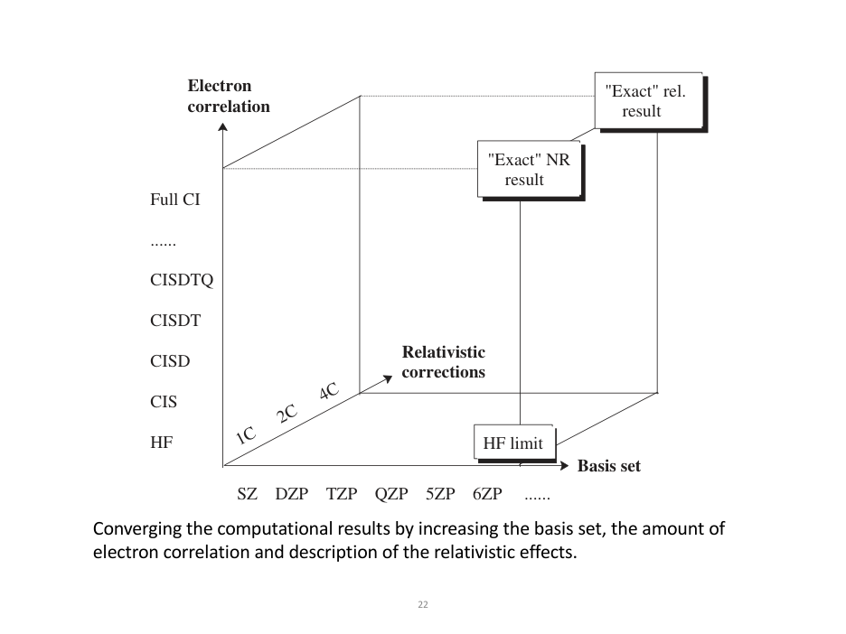
原文翻译
通过增大基组、增加电子相关的程度、改进相对论效应的描述，来使计算结果收敛。
（立方体三个轴：基组 SZ → DZP → TZP → QZP → 5ZP → 6ZP → …；电子相关 HF → CIS → CISD → CISDT → CISDTQ → … → Full CI；相对论修正 1C → 2C → 4C。三个标注点："HF limit"（HF 极限）、"'Exact' NR result"（"精确"非相对论结果）、"'Exact' rel. result"（"精确"相对论结果）。）
讲解 · 这张图把整门课的"近似"放进了一个坐标系
基组 →（第 3 讲）
电子相关 ↑（第 4、5 讲）
相对论（第 6 讲）
HF/SZ
HF 极限
精确非相对论
精确相对论
1C：标量相对论
（DKH2 / ZORA / ECP）
2C：+ 自旋-轨道
4C：完整 Dirac
三个独立的收敛方向：任何一个方向没收敛，结果都不是"精确"的
轴 从粗到精 在哪讲 基组 SZ（最小基）→ DZ → TZ → QZ → … → 完备基组 第 3 讲 p70–76；CBS 外推第 4 讲 p43 电子相关 HF → CISD → … → Full CI 第 4 讲（DFT 是另一条路，第 5 讲） 相对论 1C（标量）→ 2C（+SOC）→ 4C（Dirac） 本讲 p15–p21
两个值得注意的细节
"精确"都打了引号 ：即使三个方向都走到头，结果也只在 BO 近似（第 2 讲 p78）和"忽略 QED"下是精确的。相关轴上的 CIS ：对基态 能量来说，CIS 给出的就是 HF 能量——因为 Brillouin 定理（第 4 讲 p16），单激发不和 HF 基态混合。它出现在轴上表示"激发级别"的阶梯，CIS 真正的用处是算激发态 （p39）。三个方向并不完全独立 ：相对论计算需要专门的基组（p18 拓展），而电子相关在重元素中本身也受相对论影响。实践中通常先定好相对论级别，再在它之上收敛基组和相关。
考点
画出/描述三维收敛图：基组、电子相关、相对论三个轴，以及 HF 极限、精确非相对论、精确相对论三个点
1C / 2C / 4C 分别指什么
p23 溶剂效应概览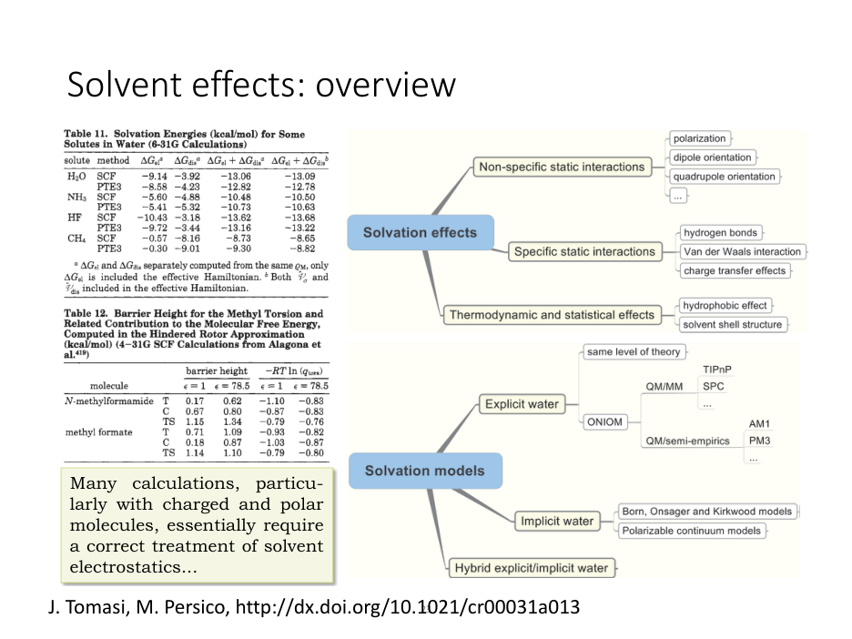
原文翻译
许多计算，尤其是涉及带电和极性分子的计算，本质上需要正确处理溶剂的静电作用……
（左上表 11：一些溶质在水中的溶剂化能（kcal/mol，6-31G），分为静电部分 ΔG el 与色散部分 ΔG dis 。左下表 12：N -甲基甲酰胺、甲酸甲酯的甲基扭转能垒在 ε = 1（真空）与 ε = 78.5（水）中的对比。）
（右侧思维导图——溶剂化效应 ：① 非特异的静态相互作用：极化、偶极取向、四极取向…；② 特异的静态相互作用：氢键、范德华相互作用、电荷转移效应；③ 热力学与统计效应：疏水效应、溶剂壳层结构。溶剂化模型 ：① 显式水：同一理论水平；ONIOM（QM/MM 用 TIPnP、SPC 等水模型；QM/半经验用 AM1、PM3 等）；② 隐式水：Born、Onsager、Kirkwood 模型；极化连续介质模型；③ 显式/隐式混合水。）
讲解 · 先分清"效应"和"模型"两棵树
溶剂化效应 例子 哪种模型能描述 非特异静电 溶剂整体被溶质的电荷/偶极极化，反过来稳定溶质 隐式模型（PCM）就够 特异作用 氢键、电荷转移、配位 必须显式溶剂分子 （p33）热力学/统计 疏水效应、溶剂壳层的动态结构 需要分子动力学采样（显式 + 大量构型）
溶剂化模型 做法 优缺点 显式 真的放很多溶剂分子进去（p24–p26） 能描述氢键和结构；贵，需要构型平均 隐式（连续介质） 把溶剂当成一块介电常数为 ε 的均匀介质（p27–p32） 便宜，自动包含"平均"；丢了特异作用 混合 第一溶剂层显式 + 外面连续介质（p33） 折中，实践中很常用
拓展 · 从表 11、12 读出的两件事
表 11 ：H₂O、NH₃、HF 这些极性分子的溶剂化能主要来自静电（ΔG el ≈ −6 ~ −10 kcal/mol）；非极性的 CH₄ 几乎全部来自色散（ΔG el ≈ −0.5，ΔG dis ≈ −8）。所以只算静电的溶剂模型对非极性分子几乎没用。 表 12 ：扭转能垒在真空 (ε =1) 和水 (ε =78.5) 中差 0.1–0.5 kcal/mol。极性不同的构象被溶剂稳定的程度不同 → 溶剂能改变构象平衡和反应能垒 。
考点
溶剂化模型三类：显式、隐式、混合；各自能/不能描述什么
p24–26 显式水模型：分子动力学、半经验与 HF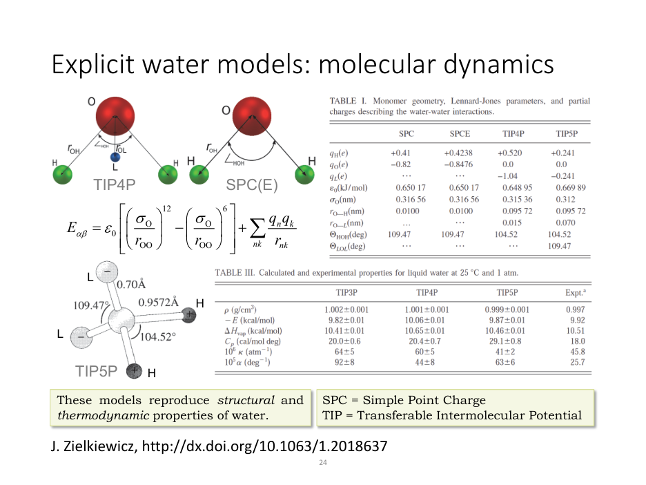
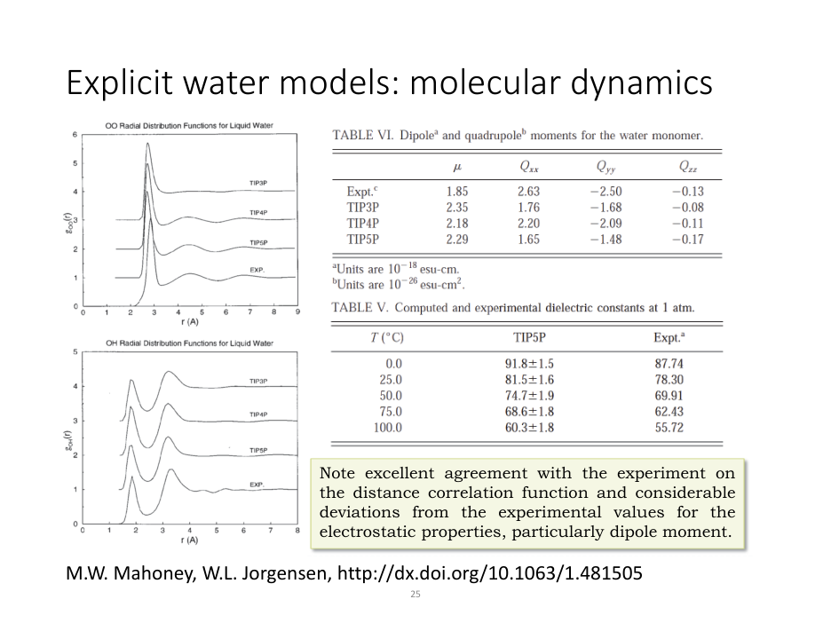
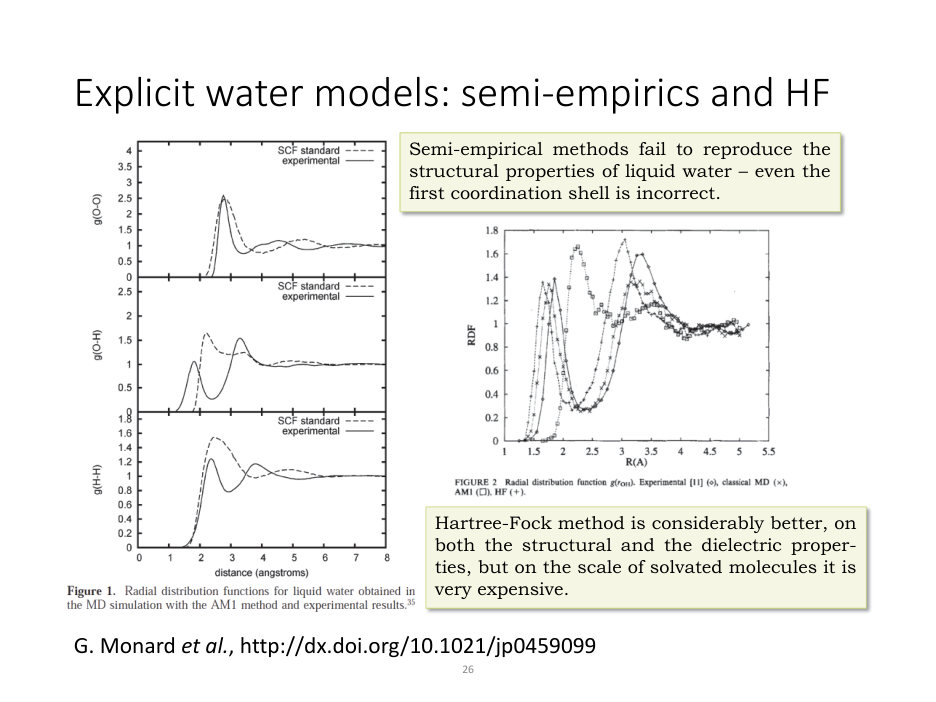
原文翻译（p24）
（示意图：TIP4P、SPC(E)、TIP5P 三种水模型的几何结构。TIP4P 在 HOH 角平分线上多一个带负电的虚拟点 L；TIP5P 在四面体方向放两个虚拟点 L 模拟孤对电子；SPC 只有三个点。）
水分子之间的相互作用能：E αβ ε 0 [(σ O /r OO )¹² − (σ O /r OO )⁶] + Σnk q n q k r nk
（表 I：单体几何、Lennard-Jones 参数和部分电荷。表 III：25 °C、1 atm 下液态水的计算与实验性质。）
这些模型能重现水的结构和热力学性质。 SPC = Simple Point Charge（简单点电荷）；TIP = Transferable Intermolecular Potential（可转移分子间势）。
原文翻译（p25）
（左：液态水的 O–O、O–H 径向分布函数，TIP3P/TIP4P/TIP5P 与实验对比。右表 VI：水单体的偶极矩与四极矩；表 V：计算与实验的介电常数。）
注意：在距离相关函数上与实验吻合得非常好，但在静电性质上，尤其是偶极矩上，与实验值偏差很大。
原文翻译（p26）
半经验方法无法重现液态水的结构性质——连第一配位层都不对。
（左图：用 AM1 方法做 MD 得到的液态水径向分布函数与实验对比。右图：实验、经典 MD、AM1、HF 的 g (r OH ) 对比。）
Hartree–Fock 方法在结构和介电性质上都好得多，但对溶剂化分子的尺度来说非常昂贵。
公式解析 · 水-水相互作用势
★ 刚性点电荷水模型的对势
E αβ ε 0 [ (σ O /r OO )¹² − (σ O /r OO )⁶ ]Σn ∈α k ∈β q n q k r nk
符号 名称 含义 α , β 两个水分子的编号 总能量 = 所有水分子对的 E αβ 第一项 Lennard-Jones 势 只作用在两个 O 原子之间。r ⁻¹² 项 = 近距离泡利排斥；−r ⁻⁶ 项 = 色散吸引（第 5 讲 p35 的 C ₆/R ⁶） ε 0 势阱深度 kJ/mol，表 I 中约 0.65（这里不是真空介电常数！ 符号撞车）。常见写法是 4ε […] σ O 碰撞直径 约 0.315 nm，O–O 之间 LJ 势为零的距离 r OO 两个 O 的距离 — 第二项 点电荷库仑作用 水分子 α 上每个电荷点 n 与 β 上每个电荷点 k 之间的库仑能 q n 部分电荷 放在 H、O 或虚拟点 L 上的固定电荷（表 I：SPC 的 q H = +0.41、q O = −0.82）
讲解 · 三种水模型的区别就是"电荷放在哪"
模型 点数 负电荷放在哪 SPC / SPC/E 3 直接放在 O 上。HOH 角 109.47°（四面体角，不是真实的 104.52°） TIP4P 4 O 上不带电，负电荷挪到 HOH 角平分线上离 O 0.15 Å 的虚拟点 L——更好地重现四极矩 TIP5P 5 两个虚拟点 L 沿四面体方向，模拟 O 的两对孤对电子 ——氢键方向性最好
p25 的"偶极矩偏大"不是缺陷，是故意的
表 VI：模型水单体的偶极矩 2.18–2.35 D，而气相水的实验值只有 1.85 D。
原因：这些模型的电荷是固定 的，不能被周围分子极化；但液态水里每个水分子都被邻居极化，真实偶极约 2.6–3.0 D。 参数化时把"平均极化"直接吸收进了固定电荷里，所以单体偶极偏大——这样才能在液态下给出正确的结构和能量（p25 的 RDF 吻合得很好）。这类模型叫"有效对势"。更严格的做法是可极化力场 （AMOEBA 等），代价更高。
拓展 · 什么是径向分布函数 g (r )（p25–26 的图）
g (r ) = "以某个 O 为中心、在距离 r 处找到另一个 O 的概率" ÷ "完全随机时的概率"。
g (r ) = 1：和随机一样（远处）第一个峰（O–O 约 2.8 Å）：第一水合层，即氢键连接的邻居
第二个峰（约 4.5 Å）：第二层，反映四面体氢键网络
它可以由 X 射线/中子衍射实验测得，所以是检验水模型的标准。p26：AM1 水的第一峰位置和高度都错了——半经验方法的参数没有针对氢键拟合好 ，不适合做溶剂。
考点
刚性水模型的势函数：LJ + 点电荷库仑；SPC / TIP4P / TIP5P 的区别
为什么模型的单体偶极大于实验（固定电荷吸收了平均极化）
p27 ★ 连续介质溶剂化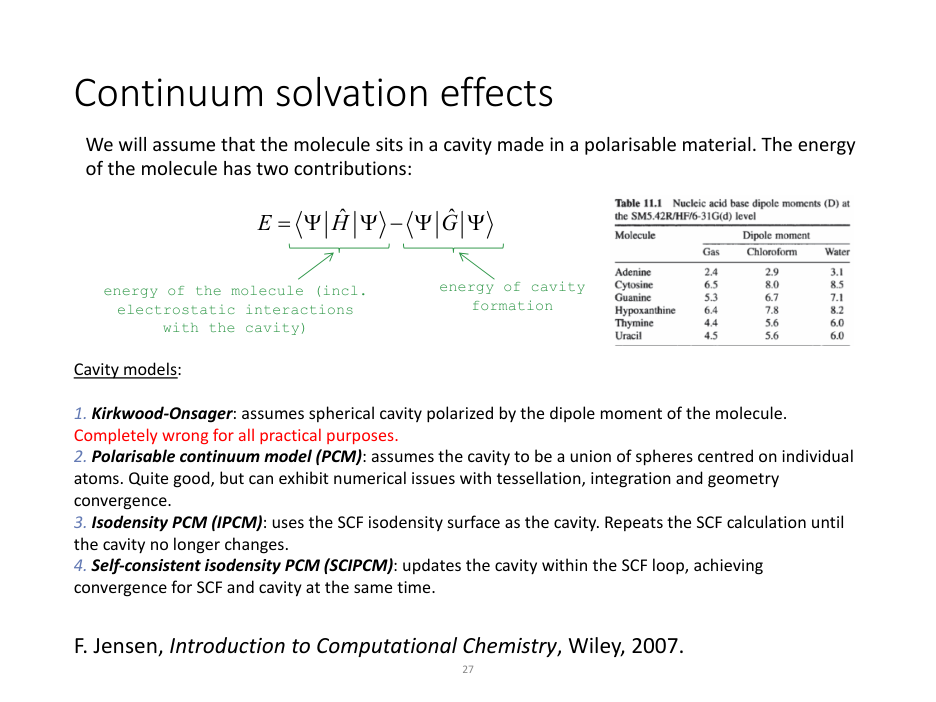
原文翻译
我们假设分子处在一个可极化材料中挖出的空穴 里。分子的能量有两个贡献：
E = ⟨Ψ|Ĥ |Ψ⟩ − ⟨Ψ|Ĝ |Ψ⟩ （前一项：分子的能量（包括与空穴的静电相互作用）；后一项：空穴形成能）
（表 11.1：核酸碱基在气相、氯仿、水中的偶极矩 (D)，SM5.42R/HF/6-31G(d) 水平。）
空穴模型 ：
Kirkwood–Onsager ：假设一个被分子偶极矩极化的球形 空穴。对所有实际用途都完全错误。 极化连续介质模型 (PCM) ：假设空穴是以各原子为中心的球的并集 。相当好，但可能在曲面剖分、积分和几何收敛上出现数值问题。等密度 PCM (IPCM) ：用 SCF 等密度面作为空穴。重复 SCF 计算直到空穴不再变化。自洽等密度 PCM (SCIPCM) ：在 SCF 循环内部更新空穴，使 SCF 和空穴同时收敛。
公式解析
连续介质中分子的能量（讲义形式）
E = ⟨Ψ|Ĥ |Ψ⟩ − ⟨Ψ|Ĝ |Ψ⟩
符号 名称 含义 Ψ 溶剂中的波函数 和真空中的不一样 ——它是在"溶剂反应场"存在时自洽求出的Ĥ 分子哈密顿量 讲义标注：包括分子与空穴（极化了的介质）的静电作用 Ĝ 溶剂相关算符 讲义标注为"空穴形成能"。实际程序里还分出色散-排斥等非静电项（p29）
讲解 · 连续介质模型的核心图像：反应场
溶剂 = 均匀介质，介电常数 ε
δ− δ+
溶质偶极 μ
+ + + +
− − − −
空穴表面上感应出的极化电荷（与溶质电荷反号）
反应场的自洽循环
① 溶质的电荷分布极化溶剂
② 极化的溶剂产生"反应场"
③ 反应场加入 Fock 算符，
溶质电子重新分布（偶极变大）
④ 回到 ①，直到自洽
= SCRF（自洽反应场）
连续介质模型：溶剂只剩一个参数 ε，它在空穴表面感应出电荷，反过来极化溶质
这就是 Gaussian 关键词 scrf 的全称 Self-Consistent Reaction Field （自洽反应场）。它和 SCF 完全同构：反应场依赖溶质密度，密度又在反应场里求出，所以要迭代。
拓展 · 表 11.1：溶剂让溶质"更极性"
胞嘧啶的偶极矩：气相 6.5 D → 氯仿 8.0 D → 水 8.5 D。溶剂的反应场把溶质的电子云进一步拉开，偶极变大——这就是上图第 ③ 步的直接证据。 这也意味着：溶剂中的电荷、偶极、轨道能都和真空不同，比较实验时要用溶剂中的计算。
考点
连续介质模型：溶剂 → 介电常数 ε ，分子处于空穴中；反应场与溶质自洽
四种空穴模型：Kirkwood–Onsager（球，错）、PCM（原子球并集）、IPCM（等密度面，外循环）、SCIPCM（等密度面，SCF 内更新）
p28 过时的球形空穴模型：Born、Bell、Onsager、Kirkwood原文翻译
Born 模型 ：球形空穴中放一个电荷：ΔG electr = −[(ε −1)/(2ε )]·q ²/R
Bell 模型 ：球形空穴中放一个偶极：ΔG electr = −[(ε −1)/(2ε +1)]·μ ²/R ³
Onsager 模型 ：球形空穴中放一个可极化偶极：ΔG electr = −[(ε −1)/(2ε +1)]·(μ ²/R ³)·[1 − ((ε −1)/(2ε +1))·(2α /R ³)]
Kirkwood 模型 ：在球形和椭球形（Kirkwood–Westheimer）空穴中对分子静电势做一般的多极展开。
四个模型的共同特点：对所有实际用途都完全不准确。
公式解析 · 球形空穴的静电溶剂化能
★ Born 公式（离子）
ΔG Born = − ( (ε − 1) ⁄ 2ε ) · q ² ⁄ R = − ( 1 − 1/ε ) · q ² ⁄ (2R )
★ Bell / Onsager 公式（偶极）
ΔG dipole = − ( (ε − 1) ⁄ (2ε + 1) ) · μ ² ⁄ R ³
符号 名称 含义 ΔG electr 静电溶剂化自由能 从真空移入溶剂的静电部分。负值 = 溶剂稳定溶质 ε 溶剂介电常数 真空 1，氯仿 4.8，乙醇 24.6，水 78.4 （这里的 ε 是相对 介电常数，无量纲） q 离子电荷 原子单位下 Na⁺ 为 +1 R 空穴半径 这是可调参数，结果对它极其敏感 （离子 ∝ 1/R ，偶极 ∝ 1/R ³）μ 溶质偶极矩 — α 溶质极化率 Onsager 模型中，偶极能被反应场进一步感应放大
讲解 · 从公式读出的两件事
① 介电常数的"饱和"
溶剂 ε Born 因子 (ε −1)/2ε 偶极因子 (ε −1)/(2ε +1) 真空 1 0 0 氯仿 4.8 0.40 0.36 乙醇 24.6 0.48 0.48 水 78.4 0.49 0.49 导体 ∞ 0.5 0.5
从 ε ≈ 20 开始，因子几乎不再变化——乙醇和水在连续介质模型里给出几乎相同的静电溶剂化能。 真正区分它们的是氢键等特异作用（p33），而连续介质模型描述不了。这也是 COSMO/CPCM 可以把溶剂近似成导体（ε =∞）再做小修正的原因（p30 拓展）。
② 为什么"完全不准确"
真实分子不是球，电荷分布也不是一个点电荷或一个点偶极。球形模型的结果几乎完全取决于人为选定的 R ——换一个 R 结果能差好几倍。所以它们只有教学和定性意义；Gaussian 里的 scrf=dipole（Onsager 模型）已基本不再使用。
⚠ Onsager 式中方括号应该取倒数
讲义的 Onsager 公式写成 Bell 结果乘以 [1 − x ]，x = [(ε −1)/(2ε +1)]·2α /R ³ > 0。这会让可极化偶极的溶剂化能比 刚性偶极更小 ——与物理相反：反应场会感应出额外偶极，稳定作用应该更强 。
推导：反应场 F = gμ tot ，g = 2(ε −1)/[(2ε +1)R ³]；感应后 μ tot = μ + αF ⟹ μ tot = μ /(1 − gα )；能量 −½gμμ tot ，所以
ΔG Onsager = − [(ε −1)/(2ε +1)]·(μ ²/R ³) · [ 1 − ((ε −1)/(2ε +1))·(2α /R ³) ]−1
α → 0 时退回 Bell 公式 ✔；α 越大 |ΔG | 越大 ✔。
考点
Born 公式 −(1−1/ε )q ²/2R ；Bell/Onsager 的偶极因子 (ε −1)/(2ε +1)
介电因子在高 ε 下饱和；球形模型对 R 极其敏感，故不实用
p29 现代空穴模型：溶剂化自由能的分解与分子表面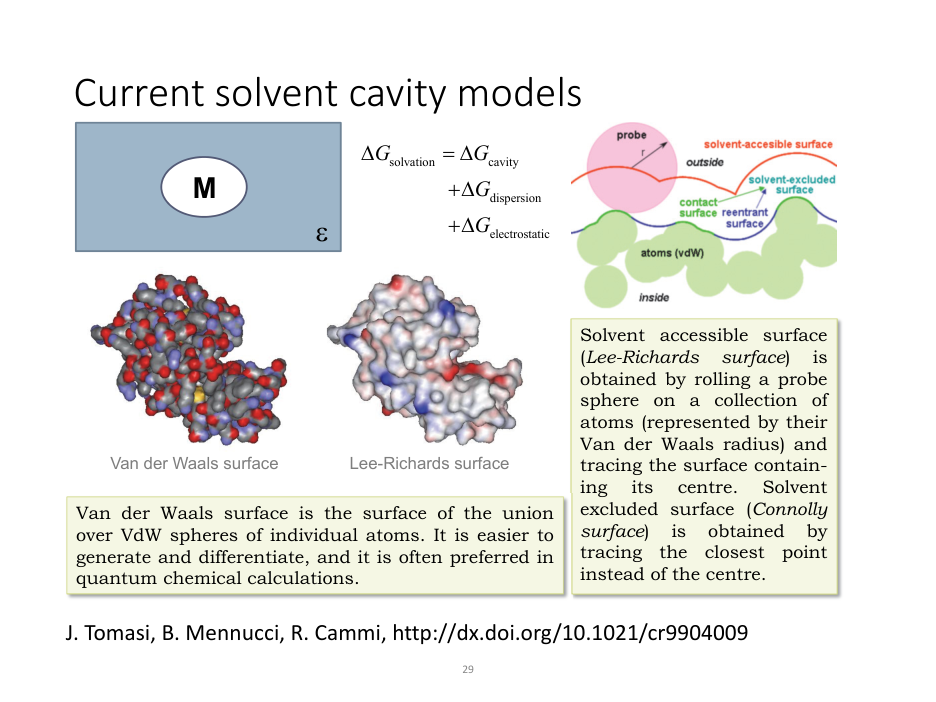
原文翻译
ΔG solvation = ΔG cavity + ΔG dispersion + ΔG electrostatic
溶剂可及表面 （Lee–Richards 表面）：把一个探针球在一组原子（用范德华半径表示）上滚动，描出探针球心 所在的曲面。溶剂排除表面 （Connolly 表面）：描出探针上最接近原子的点 而不是球心。
范德华表面 ：各原子范德华球的并集的表面。它更容易生成和求导，因此在量子化学计算中常被采用。
（左图：一个蛋白的范德华表面与 Lee–Richards 表面；右图：探针、溶剂可及表面、溶剂排除表面、接触面、再入面的示意。）
公式解析 · 溶剂化自由能的三项
★ 溶剂化自由能分解
ΔG solv = ΔG cav + ΔG disp + ΔG elec
项 名称 含义与符号 ΔG cav 空穴形成能 在溶剂里"挖一个洞"要推开溶剂分子、打断它们之间的作用 → 正 （不利）。约正比于表面积 ΔG disp 色散（-排斥）能 溶质与溶剂之间的范德华吸引 → 负 。对非极性分子是主要稳定项（p23 表 11 的 CH₄） ΔG elec 静电能 溶质电荷分布与极化介质的作用 → 负 。对离子和极性分子是主导项。PCM 主要算的就是这一项
讲解 · 三种分子表面
表面 怎么构造 用途 范德华 (vdW) 表面 每个原子一个范德华球，取并集的外表面 最简单、好求导 → PCM 空穴通常用它（半径乘 1.1–1.2） 溶剂可及表面 SAS 探针（水取 1.4 Å）贴着原子滚，记录球心 轨迹 比 vdW 面向外扩一个探针半径；ΔG cav 常正比于 SAS 面积 溶剂排除表面 SES 记录探针上离原子最近的点 ；由"接触面"+"再入面"组成 填平了溶剂进不去的小缝隙，最接近"溶剂看到的分子形状"
考点
ΔG solv = 空穴 + 色散 + 静电，各项符号
vdW 面、SAS（球心轨迹）、SES（最近点轨迹）的区别
p30–32 ★ 极化连续介质模型 (PCM)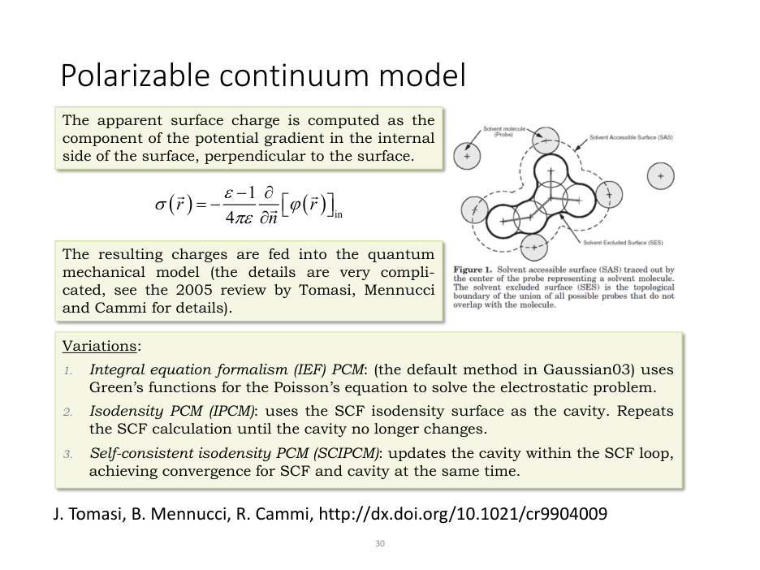
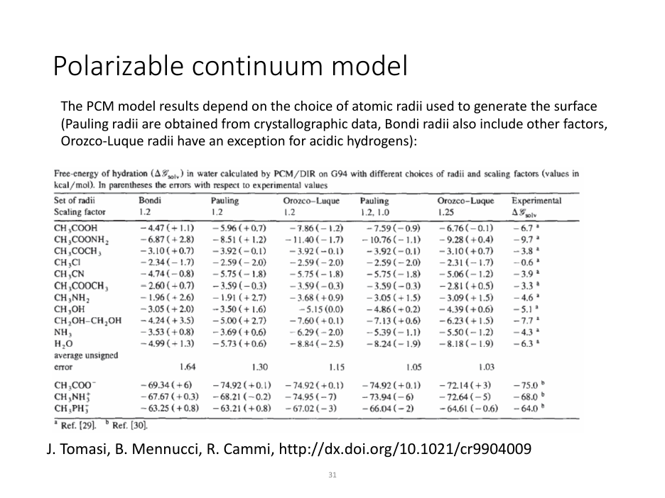
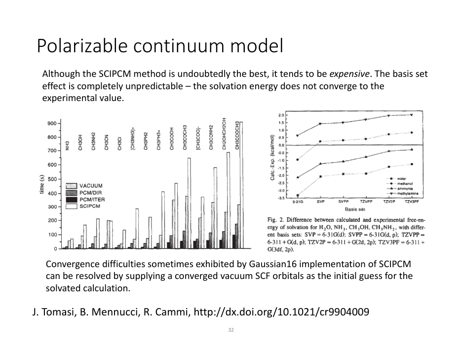
原文翻译（p30）
表观表面电荷 由表面内侧、垂直于表面的电势梯度分量计算：
σ (r ) = −[(ε −1)/(4πε )]·(∂/∂n )[φ (r )]in
得到的电荷被输入量子力学模型（细节非常复杂，见 Tomasi、Mennucci、Cammi 2005 年的综述）。
变体 ：① 积分方程形式 (IEF) PCM ：（Gaussian03 的默认方法）用 Poisson 方程的 Green 函数求解静电问题。② IPCM ：用 SCF 等密度面作空穴，反复做 SCF 直到空穴不再变化。③ SCIPCM ：在 SCF 循环内部更新空穴，SCF 与空穴同时收敛。
原文翻译（p31）
PCM 的结果依赖于生成表面所用的原子半径（Pauling 半径来自晶体学数据，Bondi 半径还考虑了其他因素，Orozco–Luque 半径对酸性氢有例外处理）。
（表：用不同半径和缩放因子在 G94 上以 PCM/DIR 计算的水合自由能 (kcal/mol)，括号内为与实验的误差。中性分子的平均绝对误差：Bondi×1.2 为 1.64，Pauling×1.2 为 1.30，Orozco–Luque×1.2 为 1.15，Pauling×1.2/1.0 为 1.05，Orozco–Luque×1.25 为 1.03。离子（CH₃COO⁻、CH₃NH₃⁺、CH₃PH₃⁺）的误差可达数 kcal/mol。）
原文翻译（p32）
虽然 SCIPCM 方法无疑是最好的，但它往往很贵。基组效应完全不可预测——溶剂化能不会随基组增大收敛到实验值。
Gaussian16 的 SCIPCM 实现有时出现的收敛困难，可以通过把已收敛的真空 SCF 轨道作为溶剂化计算的初始猜测 来解决。
公式解析 · 表观表面电荷
★ PCM 的表观表面电荷
σ (r ) = − [ (ε − 1) ⁄ (4πε ) ] · ∂φ (r ) ⁄ ∂n |in
符号 名称 含义 σ (r )表观表面电荷密度 溶剂被极化后在空穴表面上等效出现的电荷 （单位面积上的电荷）——真实溶剂里是溶剂分子偶极的取向，PCM 用一层表面电荷来等效r 空穴表面上的点 程序把表面剖分成几百到几千个小块 (tesserae)，每块放一个点电荷 φ (r )总静电势 溶质（核 + 电子）加上表面电荷自身产生的电势 ∂/∂n 法向导数 沿表面外法线方向的导数 = 电场的法向分量 |in 在内侧取值 在空穴内侧（溶质一侧）计算 (ε −1)/(4πε ) 介电因子 ε = 1（真空）时为 0 → 没有表面电荷 ✔
讲解 · PCM 算法一句话
溶质的电荷 → 在表面上感应出 σ → σ 产生的电势作为额外的单电子项加进 Fock 矩阵 → 溶质密度改变 → σ 改变 → 迭代到自洽。 这就是 p27 的反应场循环的具体实现。
变体 空穴怎么定 特点 IEF-PCM 原子球并集 Gaussian 默认（写 scrf=(solvent=water) 就是它） C-PCM / COSMO 原子球并集 先把溶剂当导体 （ε = ∞，表面电荷使表面电势为零，好解得多），再乘校正因子 f (ε ) = (ε −1)/(ε +0.5)。ORCA 的 CPCM 就是这个（p43 作业用） IPCM 电子密度等值面 空穴形状由分子自身决定，不需要选半径；外循环 SCIPCM 等值面，SCF 内更新 讲义说最好但贵，收敛难 SMD 原子球并集 + 参数化的非静电项 在 IEF-PCM 静电之外加上 p29 的空穴和色散项；算溶剂化自由能 ΔG solv 时推荐用它 （Gaussian scrf=(smd,solvent=water)，ORCA ! CPCM(water) + %cpcm smd true end）
p31–32 的两个实用警告
结果依赖原子半径 ：同一个分子换一套半径，水合能差 1–3 kcal/mol；离子更大（CH₃COO⁻ 在不同半径下误差从 +0.1 到 +6）。所以连续介质模型的溶剂化能精度大约是 1 kcal/mol（中性）和几 kcal/mol（离子） ，不能指望更好。基组效应不可预测 ：PCM 的参数（半径）是在某个基组/方法下拟合的，换大基组不一定更接近实验——又一个"方法组合比单独升级更重要"的例子（第 4 讲 p41–42）。收敛技巧 （p32）：先在真空中算收敛，再用 guess=read 读入轨道做溶剂计算（第 3 讲 p60 拓展）。
考点
表观表面电荷公式及每个符号含义；PCM 的自洽过程
IEF-PCM、IPCM、SCIPCM 的区别；PCM 结果依赖原子半径
p33 显式溶剂 + PCM：混合模型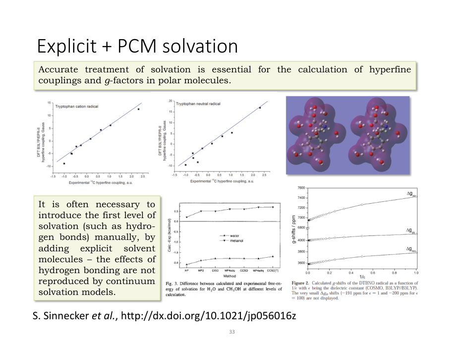
原文翻译
对于极性分子中的超精细耦合和 g 因子的计算，准确处理溶剂化至关重要。
常常需要手动加入第一溶剂层（例如氢键），即添加显式溶剂分子——连续介质溶剂化模型无法重现氢键的效应。
（图：色氨酸阳离子自由基与中性自由基的 DFT 计算与实验 ¹³C 超精细耦合的相关图；色氨酸自由基与周围显式水分子的结构；H₂O 和 CH₃OH 在不同计算水平下溶剂化自由能与实验的差；DTBNO 自由基的 g 偏移随 1/ε 的变化。）
讲解 · 为什么连续介质描述不了氢键
连续介质把溶剂"抹平"成一个只有 ε 的介质，没有方向、没有具体的 H 原子、没有电荷转移 。而氢键 X–H···Y 是强方向性的、局部的相互作用，还有少量共价（电荷转移）成分。
外面：连续介质（PCM，ε = 78.4）——处理长程、平均的极化
溶质
H₂O
H₂O
H₂O
里面：显式水分子（QM）
处理氢键等特异作用
"簇-连续介质"混合模型：第一溶剂层用真实分子，外面用 PCM
拓展 · 什么时候必须加显式溶剂
情形 原因 EPR 参数（超精细 A 、g ） （p33 的主题）氢键直接改变自由基的自旋密度分布——讲义图中 DTBNO 的 g 偏移随溶剂明显变化 质子转移、酸碱反应、pK a 水分子直接参与反应（质子接力） 阴离子 （尤其小阴离子 F⁻、OH⁻）强氢键，PCM 严重低估稳定化 金属离子的配位层 水直接配位到金属上，是化学键而不是"溶剂效应" 溶剂化显色 （吸收峰随溶剂移动）氢键给体/受体溶剂的特异位移
注意 ：加了显式水之后，结构有多种可能（水放在哪），严格做法是多取几个构型取平均，或用 MD 采样。
考点
连续介质模型描述不了氢键等特异作用 → 需要显式溶剂 + PCM 的混合模型
p34–35 Poisson–Boltzmann 模型：含离子的溶液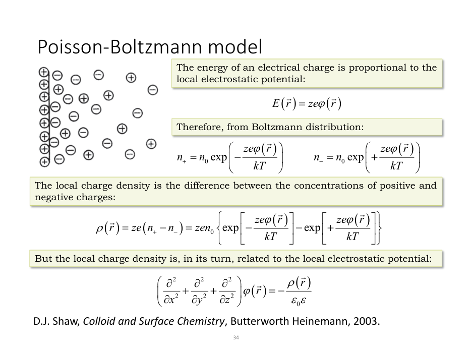
原文翻译（p34）
（图：带正电的表面附近，溶液中的正、负离子分布。）
一个电荷的能量正比于局部静电势：E (r ) = zeφ (r )
因此，由 Boltzmann 分布：n + = n 0 exp(−zeφ (r )/kT )， n − = n 0 exp(+zeφ (r )/kT )
局部电荷密度是正、负电荷浓度之差：ρ (r ) = ze (n + − n − ) = zen 0 {exp[−zeφ /kT ] − exp[+zeφ /kT ]}
而局部电荷密度又和局部静电势相联系：(∂²/∂x ² + ∂²/∂y ² + ∂²/∂z ²)φ (r ) = −ρ (r )/(ε 0 ε )
原文翻译（p35）
把两个方程合起来，得到：∇²φ (r ) = −(zen 0 /ε 0 ε ){exp[−zeφ /kT ] − exp[+zeφ /kT ]}
这就是 Poisson–Boltzmann 方程 。因为它假设液体中存在独立的点电荷，所以不适用于（纯）介电液体 。
ΔG electr = ½∫ρ (r )φ reac (r )d³r ， φ reac (r ) = φ solv (r ) − φ vac (r )
方程在三维格点上数值求解。得到的反应势 （溶剂中与真空中电势之差）决定了溶剂化 Gibbs 自由能的静电部分。
（图：DNA 分子周围水（蓝）、钠离子（红）和氯离子（绿）分布的交叉眼立体图。）
公式解析 · 从两个已知方程拼出 PB 方程
① Boltzmann：离子浓度随电势变化
n ± (r ) = n 0 exp( ∓ zeφ (r ) ⁄ kT )
② Poisson：电荷产生电势
∇²φ (r ) = − ρ (r ) ⁄ (ε 0 ε )
★ ①代入② = Poisson–Boltzmann 方程
∇²φ (r ) = (2zen 0 ⁄ ε 0 ε ) · sinh( zeφ (r ) ⁄ kT )
符号 名称 含义 φ (r )静电势 要解的未知函数 z 离子价数 NaCl 为 1（对称 z :z 电解质） e 元电荷 1.602×10⁻¹⁹ C n 0 本体离子浓度 远离溶质处（φ = 0）正、负离子各自的数密度 n + , n − 局部正/负离子浓度 正电势处负离子富集、正离子贫化（Boltzmann，第 2 讲 p7） k , T Boltzmann 常数、温度 kT 是热能尺度：热运动把离子"搅散"，与静电吸引竞争ε 0 , ε 真空介电常数、相对介电常数 溶剂仍被当作介电常数为 ε 的连续介质 sinh 双曲正弦 sinh x = (ex −x )/2。讲义里 {exp(−…) − exp(+…)} = −2 sinh(…)，与前面的负号合并即得上式 φ reac 反应势 溶剂中电势 − 真空中电势 = 溶剂（及离子）极化带来的额外电势 ½ — 线性响应中极化能总是"相互作用能的一半"（另一半用来极化介质）
讲解 · PB 方程在描述什么
PCM（p30）的溶剂只有介电常数、没有自由离子。PB 在此基础上加入了溶液中可以自由移动的离子 （盐） ：溶质的电荷把反号离子吸到身边、同号离子推开，形成一层"离子氛"，从而屏蔽溶质的电场。这就是讲义 p35 图中 DNA（带大量负电的磷酸骨架）周围富集 Na⁺ 的原因。
讲义说"不适用于介电液体"：意思是 PB 描述的是电解质溶液 ；如果溶液里没有离子（n 0 = 0），方程右边为零，就退化成纯介电的 Poisson 方程——那是 PCM 的情形。
拓展 · 线性化：Debye–Hückel 与 Debye 长度
电势不大时（zeφ ≪ kT ），sinh x ≈ x ，PB 方程变成线性的：
∇²φ = κ ²φ ， κ ² = 2z ²e ²n 0 ⁄ (ε 0 εkT ) ⟹ 点电荷的解 φ ∝ e−κr ⁄ r
电势不再按 1/r 衰减，而是多了一个指数"屏蔽"因子。Debye 长度 1/κ 是屏蔽的特征距离：25 °C 水中 1:1 盐 0.1 M 时约 0.96 nm，1 mM 时约 9.6 nm。盐越浓，屏蔽越强，静电作用越短程 ——这就是加盐能让蛋白质沉淀（"盐析"）、能调节 DNA 双螺旋稳定性的原因。这正是物理化学里 Debye–Hückel 活度系数理论的来源。
应用 ：PB 方程是生物分子静电计算的标准工具（APBS、DelPhi 程序），MM-PBSA 方法用它估算蛋白-配体结合自由能。
考点
PB 方程 = Boltzmann 分布（离子浓度）+ Poisson 方程（电荷 → 电势）；每个符号的含义
PB 与 PCM 的区别：PB 含可移动离子；ΔG electr = ½∫ρφ reac
p36 氢键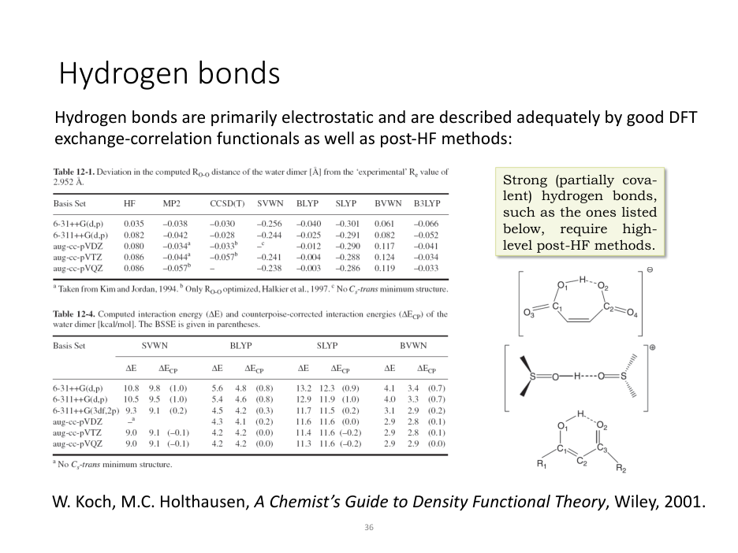
原文翻译
氢键主要是静电性质的，好的 DFT 交换-相关泛函和后 HF 方法都能充分地描述它。
（表 12-1：不同方法与基组计算的水二聚体 R O–O 距离相对"实验" R e 值 2.952 Å 的偏差 [Å]。表 12-4：水二聚体的计算相互作用能 ΔE 与经 counterpoise 校正的相互作用能 ΔE CP [kcal/mol]，括号内为 BSSE。）
强的（部分共价的）氢键，例如下列这些，需要高水平的后 HF 方法。 （右侧三个结构：马来酸氢根类阴离子中的分子内 O–H···O；两个二甲亚砜共享一个质子的阳离子 [S=O–H···O=S]⁺；β-二酮烯醇式中的共振辅助分子内氢键。）
讲解 · 从两张表读出的结论
方法 R O–O 偏差（Å）结合能（kcal/mol，大基组） 评价 HF +0.08（太长） — 没有色散和相关，结合偏弱 MP2 / CCSD(T) −0.03 ~ −0.06 — 可靠（实验结合能约 5.0） SVWN (LDA) −0.24（太短） 约 9 LDA 严重过度结合 （第 5 讲 p24） BLYP −0.00 ~ −0.04 约 4.2 好 SLYP −0.29 约 11.5 很差（只有 LDA 交换 + LYP 相关） BVWN +0.12 约 2.9 偏弱（GGA 交换 + LDA 相关） B3LYP −0.03 ~ −0.07 — 好
两条要点
交换和相关必须"配套" ：SLYP 和 BVWN 都是"一半 LDA 一半 GGA"的混搭，误差方向相反且都很大；BLYP（两边都是 GGA）就很好。这再次说明第 5 讲 p25 讲的"DFT 交换与相关的误差互相抵消"——拆开搭配就失去了抵消。 BSSE 随基组增大而减小 ：表 12-4 括号里的 BSSE 从 6-31++G(d,p) 的约 1 kcal/mol 降到 aug-cc-pVQZ 的约 0——和第 4 讲 p37–38 一致。水二聚体结合能只有约 5 kcal/mol，小基组下 BSSE 占 20%。
拓展 · 氢键的强弱分类
强度 能量（kcal/mol） 特征与计算要求 弱 < 4 C–H···O 等；色散占相当比例 → DFT 需加 D3 中等 4–15 水、醇、酰胺之间；主要是静电 → 好的 GGA/杂化泛函就够（讲义第一句话） 强 15–40 带电辅助（离子型）、共振辅助；质子几乎居中、有明显共价成分和电荷转移 → 讲义右侧三个例子，需要高水平方法 ，因为 DFT 的自相互作用误差会过度稳定"质子共享"的离域结构（第 5 讲 p33）
考点
氢键主要是静电作用；LDA 过度结合、GGA/杂化与 MP2 可靠
强（部分共价）氢键需要后 HF 方法
p37–38 ★ 非共价相互作用：范德华与芳环堆积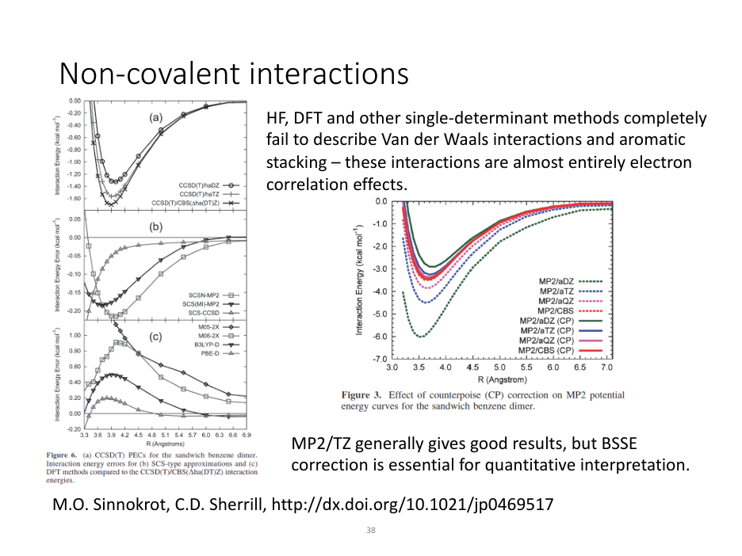
原文翻译（p37）
范德华相互作用和芳环堆积是由于两个分子在靠近时相互极化 造成的：
Ĥ = Ĥ A + Ĥ B + Ĥ AB ； Ĥ AB = Σa ∈Ab ∈Bz a z b r ab
E = E A + E B + ⟨0A 0B |Ĥ AB |0A 0B ⟩ + Σnk A 0B |Ĥ AB |n A k B ⟩⟨n A k B |Ĥ AB |0A 0B ⟩ ⁄ (E 0 (A) + E 0 (B) − E k (A) − E n (B) )
（第三项：简单的静电作用——不够好；第四项：需要知道所有激发行列式。）
除非某个方法准确地引入了激发行列式，否则它不太可能给出准确的范德华相互作用。
原文翻译（p38）
HF、DFT 及其他单行列式方法完全无法描述范德华相互作用和芳环堆积——这些相互作用几乎完全是电子相关效应。
MP2/TZ 通常给出好的结果，但 BSSE 校正对定量解释是必不可少的。
（图 6：(a) 夹心型苯二聚体的 CCSD(T) 势能曲线；(b) SCS 类近似和 (c) DFT 方法（M05-2X、M06-2X、B3LYP-D、PBE-D）相对 CCSD(T)/CBS 的相互作用能误差。图 3：counterpoise 校正对夹心苯二聚体 MP2 势能曲线的影响。）
公式解析 · 分子间相互作用的微扰展开
★ 二阶微扰下的分子间作用能
E = E A + E B + ⟨0A 0B |Ĥ AB |0A 0B ⟩ + Σ′n ,k A 0B |Ĥ AB |n A k B ⟩|² ⁄ (E 0 A + E 0 B − E n A − E k B )
符号 名称 含义 Ĥ A , Ĥ B 各分子自己的哈密顿量 把两个分子分开时各自的完整哈密顿量 Ĥ AB 分子间相互作用算符 A 中每个带电粒子 a （电子和核）与 B 中每个带电粒子 b 之间的库仑作用。这就是第 4 讲 p28 微扰论里的 Ĥ 1 z a z b 粒子电荷 电子为 −1，核为 +Z |0A 0B ⟩ 两分子都在基态 零阶波函数：A、B 基态波函数的乘积 |n A k B ⟩ A 处于态 n 、B 处于态 k 激发态乘积；Σ′ 表示排除 n = k = 0 E 0 A , E n A A 的基态、第 n 激发态能量 分母永远为负（激发态更高）→ 二阶项永远使能量降低 （第 4 讲 p35）
小笔误：讲义分母写成 E k (A) − E n (B) ，与分子里的 n A k B 标签对调了；应为 A 取 n 、B 取 k 。
讲解 · 把二阶项拆开：诱导与色散
项 哪些 (n , k ) 物理 一阶：静电 基态-基态 两个不变形 的电荷分布之间的库仑作用（偶极-偶极等）。讲义说"不够好" 二阶：诱导 n ≠0, k =0 或 n =0, k ≠0一个分子的电场让另一个 分子极化变形（永久偶极-诱导偶极） 二阶：色散 n ≠0 且 k ≠0两个分子同时 被激发 ——瞬时涨落的偶极互相关联。这就是 London 色散力
这一页解释了第 5 讲 p32 的"DFT 算不出色散"的根源
色散项要求 A 和 B 同时 激发，在超分子的波函数语言里就是"一个电子在 A 上激发、一个电子在 B 上激发"——一个双激发 行列式（两个电子的关联运动）。
HF ：只有一个行列式，没有任何激发 → 色散 = 0常规 DFT ：也是一个行列式，局域泛函又看不到远处（第 5 讲 p32）→ 色散 ≈ 0MP2 / CCSD(T) ：包含双激发（第 4 讲）→ 能算出色散
讲义说 "almost entirely electron correlation effects" 正是这个意思。补救：DFT 加 Grimme D3（第 5 讲 p35）——p38 图 (c) 里 B3LYP-D、PBE-D 的误差已降到约 0.5 kcal/mol 以内，所以"DFT 完全失败"严格说只对不加色散校正 的 DFT 成立。
拓展 · 从 p38 的苯二聚体图读出什么
观察 结论 (a) CCSD(T)/CBS 的夹心苯二聚体结合能约 −1.7 kcal/mol，平衡间距约 3.9 Å 这是基准值 图 3：MP2/aDZ 不做 CP 约 −6，做 CP 约 −2.9；MP2/CBS 约 −3.3 ① 小基组下 BSSE 巨大（比结合能本身还大）；② 即使在 CBS 极限，MP2 也把 π–π 堆积高估约一倍 （第 4 讲 p36 拓展：MP2 高估色散）(b) SCS-MP2 类方法误差约 0.1–0.2 对同自旋/异自旋分量重新标度能大幅修正 MP2 的高估
所以讲义那句"MP2/TZ 通常给出好的结果"对氢键、极性体系成立；对 π 堆积要小心 ，更推荐 SCS-MP2、DLPNO-CCSD(T)（p14）或 DFT-D3。
London 公式 （从上面的二阶式取近似得到）：E disp ≈ −(3/2)·[I A I B /(I A +I B )]·α A α B /R ⁶（I 电离能，α 极化率）——色散正比于两分子极化率之积、按 R ⁻⁶ 衰减 ，这正是 D3 里 C ₆/R ⁶ 的物理来源。
考点
分子间作用的微扰分解：静电（一阶）、诱导与色散（二阶）；色散需要两个分子同时激发
为什么 HF 和常规 DFT 算不出色散；MP2 需 BSSE 校正、且会高估 π 堆积
p39–40 ★ UV/Vis 光谱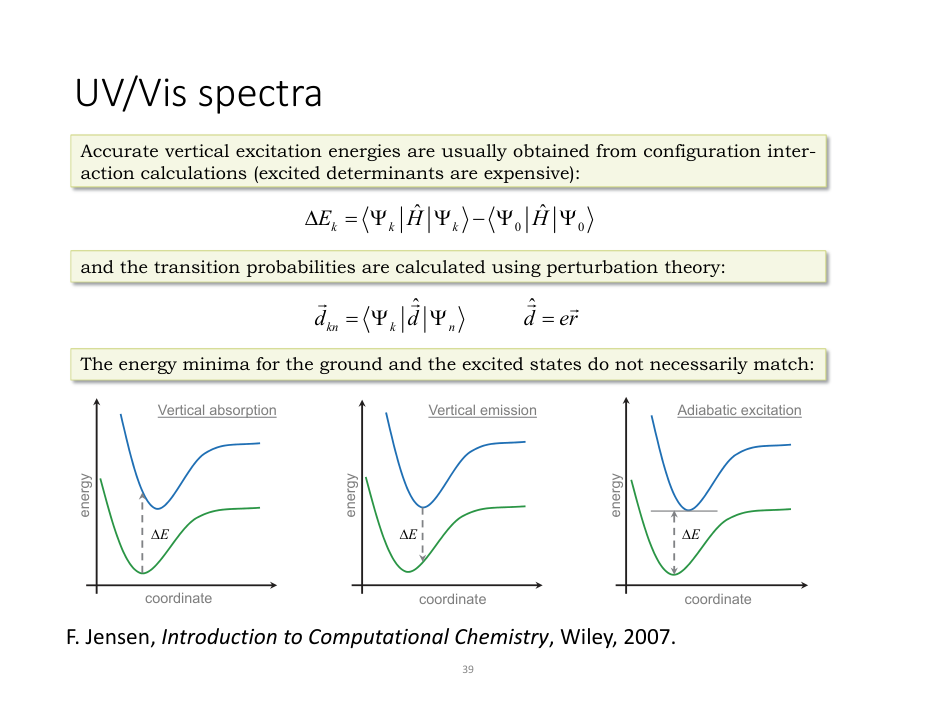
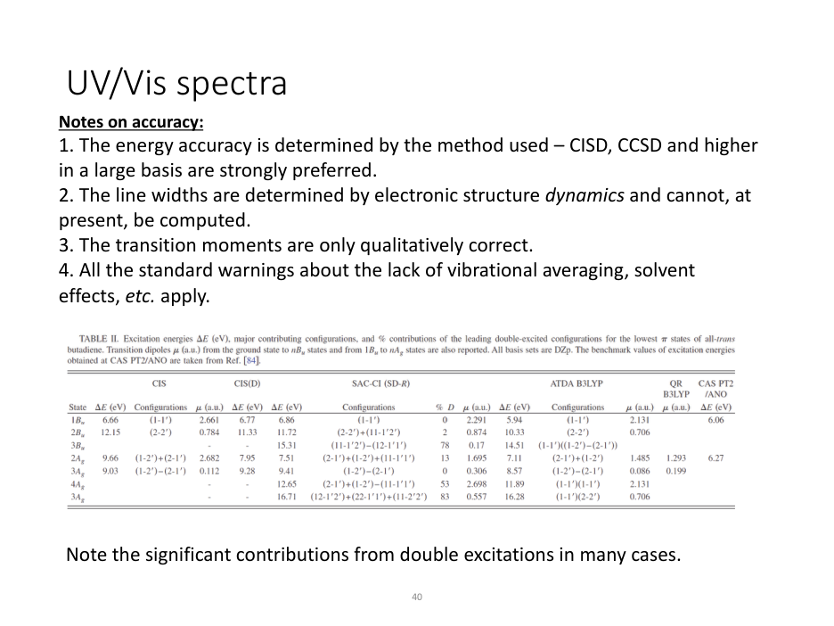
原文翻译（p39）
准确的垂直激发能 通常由组态相互作用计算得到（激发行列式很昂贵）：
ΔE k k Ĥ |Ψk 0 |Ĥ |Ψ0 ⟩
跃迁概率用微扰论计算：d kn k d̂ |Ψn d̂ = e r
基态与激发态的能量极小点不一定重合：
（三张图：垂直吸收 、垂直发射 、绝热激发 。横轴为坐标，纵轴为能量，绿色为基态势能曲线，蓝色为激发态势能曲线。）
原文翻译（p40）
关于精度的说明：
能量精度由所用方法决定——大基组下的 CISD、CCSD 及更高方法强烈推荐 。
谱线宽度由电子结构动力学决定，目前无法计算。
跃迁矩只是定性正确的。
所有关于缺少振动平均、溶剂效应等的标准警告都适用。
注意：在许多情况下双激发有显著贡献。
公式解析 · 激发能与跃迁偶极矩
★ 激发能
ΔE k k Ĥ |Ψk 0 |Ĥ |Ψ0 ⟩ = E k E 0
★ 跃迁偶极矩与振子强度
d k 0k e r |Ψ0 ⟩ ， f = (2/3) ΔE k d k 0
符号 名称 含义 Ψ0 , Ψk 基态、第 k 激发态 用 CI（第 4 讲 p13：CI 矩阵的高本征值就是激发态）、EOM-CCSD 或 TD-DFT 得到 ΔE k 激发能 对应吸收峰位置。波长 λ (nm) = 1239.84 / ΔE (eV) d̂ = e r 电偶极算符 第 2 讲 p16 拓展 d kn 跃迁偶极矩 为零 → 跃迁"禁阻"，不出峰 ；越大 → 峰越强f 振子强度 无量纲，程序输出的"f ="就是它（第 5 讲 p45 拓展）。f > 0.1 为强吸收
讲解 · 三种"激发能"的区别（Franck–Condon 原理）
核坐标（例如某个键长）
S₀ 基态
S₁ 激发态
垂直吸收
垂直发射
绝热激发
(两极小点之差)
Stokes 位移 = 吸收 − 发射
吸收和发射都是"竖直"的（核来不及动），所以吸收 > 绝热 > 发射
类型 怎么算 对应实验 垂直吸收 在基态 优化结构上算激发能 吸收光谱的峰值 （λ max ） 垂直发射 在激发态 优化结构上算 S₁ − S₀ 能量差 荧光光谱的峰值 绝热激发 E (S₁ 在 S₁ 结构) − E (S₀ 在 S₀ 结构)0–0 跃迁（加零点能校正后），光谱的起点
为什么是"竖直"的 ：Franck–Condon 原理 ——电子跃迁约 10⁻¹⁵ s，核振动约 10⁻¹³ s，跃迁瞬间核来不及移动（和第 2 讲 p78 的 BO 近似是同一个道理）。于是从基态极小点"竖直"跳到激发态曲线上；之后分子在激发态上弛豫到新的极小点，再"竖直"掉回基态。这三个数都是 p41–43 实践题要比较的东西。
p40 的精度警告，逐条对应到前面几讲
讲义说 原因 推荐 CISD、CCSD 及以上 + 大基组 激发态电子分布更弥散（需要弥散函数），相关效应和基态不同 线宽算不出来 线宽来自振动结构、激发态寿命、溶剂涨落——单点能计算只给出一根"棍子" 跃迁矩只定性正确 跃迁偶极对波函数质量比能量更敏感（第 3 讲 p28：变分原理只保护能量） 双激发贡献显著 TD-DFT 和 CIS 只包含单激发 ，漏掉双激发特征的态（多烯的暗态等，第 5 讲 p45）→ 需 CASPT2 / EOM-CCSD
考点
激发能 ΔE k d kn
垂直吸收、垂直发射、绝热激发的区别 （能画图）；Franck–Condon 原理；Stokes 位移
p41–43 实践：水中苯酚的最低激发态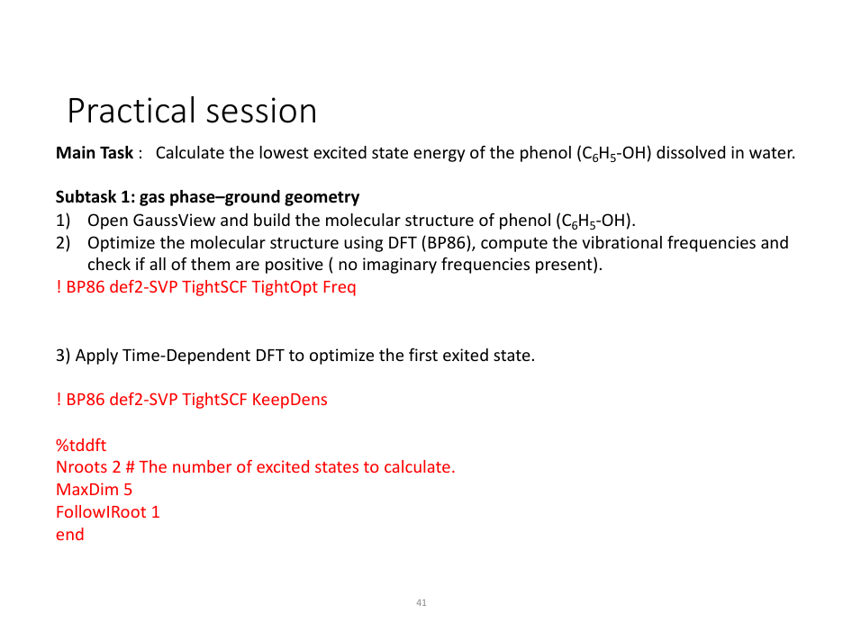
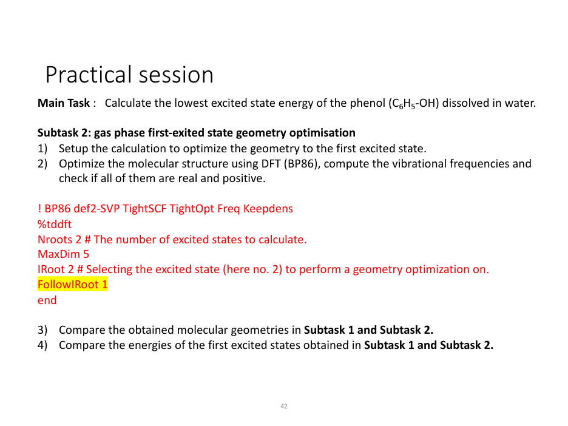
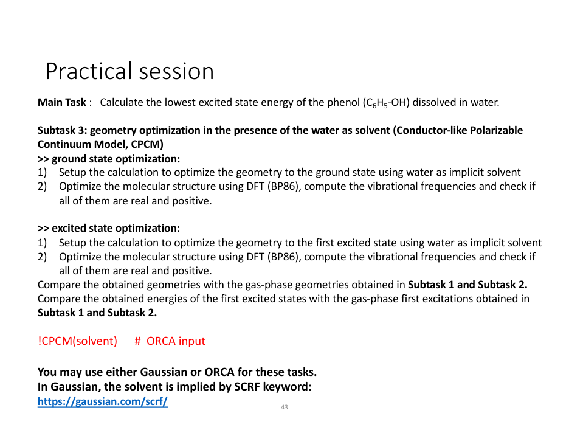
原文翻译（p41）
主任务 ：计算溶于水的苯酚 (C₆H₅–OH) 的最低激发态能量。
子任务 1：气相——基态几何
打开 GaussView，构建苯酚的分子结构。
用 DFT (BP86) 优化分子结构，计算振动频率，检查是否全部为正（没有虚频）。! BP86 def2-SVP TightSCF TightOpt Freq
用含时 DFT 优化第一激发态。! BP86 def2-SVP TightSCF KeepDens；%tddft Nroots 2（要计算的激发态数目）MaxDim 5 FollowIRoot 1 end
原文翻译（p42）
子任务 2：气相——第一激发态几何优化
设置计算，把几何优化到第一激发态。
用 DFT (BP86) 优化分子结构，计算振动频率，检查是否全部为实数且为正。! BP86 def2-SVP TightSCF TightOpt Freq Keepdens；%tddft Nroots 2 MaxDim 5 IRoot 2（选择要做几何优化的激发态，这里是第 2 个）FollowIRoot 1 end
比较子任务 1 和子任务 2 得到的分子几何。
比较子任务 1 和子任务 2 得到的第一激发态能量。
原文翻译（p43）
子任务 3：在水作为溶剂存在下做几何优化（导体型极化连续介质模型，CPCM）
>> 基态优化：① 设置用水作隐式溶剂的基态几何优化；② 用 DFT (BP86) 优化结构并计算频率，检查全部为实数且为正。
>> 激发态优化：① 设置用水作隐式溶剂的第一激发态几何优化；② 同上。
把得到的几何与子任务 1、2 的气相几何比较。把第一激发态能量与子任务 1、2 的气相激发能比较。
!CPCM(solvent) # ORCA 输入。你可以用 Gaussian 或 ORCA 完成这些任务。在 Gaussian 中，溶剂由 SCRF 关键词指定（gaussian.com/scrf/）。
逐项解析 · ORCA 的 %tddft 块
关键词 含义 BP86纯 GGA 泛函（Becke88 交换 + Perdew86 相关，第 5 讲 p29 的命名规则）。便宜；苯酚的最低激发是 ππ* 局域激发，GGA 可以给出合理趋势（电荷转移激发则要换范围分离泛函，第 5 讲 p34） Nroots 2求最低的 2 个激发态（Davidson 迭代求 CI 型矩阵最低几个本征值，第 1 讲 p18 拓展） MaxDim 5Davidson 迭代展开空间的大小（相对于 Nroots 的倍数）；越大越稳但越耗内存 IRoot n几何优化 / 频率 / 性质针对第 n 个激发态 FollowIRoot优化过程中按波函数重叠追踪 同一个态——几何变化时激发态的能量顺序可能交换（S₁ 和 S₂ 交叉），不追踪就会中途"跳"到另一个态上 KeepDens保存激发态密度，便于之后分析（差分密度、电荷转移程度） CPCM(Water)p30 拓展里的导体型 PCM；Gaussian 对应 scrf=(cpcm,solvent=water)
⚠ 讲义输入里两处要改（照抄会算错或算不出来）
子任务 1 第 3 步不是优化 ：输入里没有 Opt，所以它是在基态结构上 做 TD-DFT 单点——得到的是垂直吸收 能（p39），这正是要的；"优化第一激发态"其实是子任务 2 的内容。此外两段 %tddft 输入都要补上坐标块（或 * xyzfile 0 1 xxx.xyz 读入上一步优化好的结构）。子任务 2 应为 IRoot 1 ：任务是"优化到第一 激发态"，而讲义写的是 IRoot 2（注释也说"这里是第 2 个"），那会去优化第二激发态。
另外：激发态频率在一些 ORCA 版本里没有解析二阶导，Freq 报错时改用 NumFreq（数值频率，慢但通用）。
讲解 · 三个子任务要比较的到底是什么
子任务 得到的量 对应 p39 的哪个概念 1：S₀ 结构上的 TD-DFT S₁ 的能量（相对 S₀） 垂直吸收 2：优化 S₁ 结构 S₁ 极小点的结构和能量 与子任务 1 的 S₀ 能量相减 → 绝热激发 ；在 S₁ 结构上 S₁ − S₀ → 垂直发射 3：水中重复 1、2 溶剂中的吸收、绝热激发 溶剂化显色位移 ：溶剂对 S₀ 和 S₁ 的稳定程度不同
结构上预期看到的 ：苯酚 S₁ 是 ππ* 激发，一个电子进入反键 π* 轨道 → 苯环 C–C 键平均变长 、环略微扩张；参考值：气相苯酚 S₁ 的 0–0 跃迁实验值约 4.51 eV（约 275 nm）。GGA 泛函一般会低估激发能。
拓展 · 溶剂中的激发态：平衡与非平衡溶剂化
溶剂的极化有两部分：电子极化 （溶剂分子的电子云，瞬时跟上）和取向极化 （溶剂分子转动，约皮秒）。
过程 溶剂怎么响应 垂直吸收 （10⁻¹⁵ s）只有电子极化跟得上 → 用光学介电常数 ε ∞ = n ²（水约 1.78）→ 非平衡溶剂化 激发态几何优化 / 发射 溶剂已完全重新取向 → 用静态介电常数 ε （水 78.4）→ 平衡溶剂化
这是 Franck–Condon 原理（p39）在溶剂上的推广。不同程序、不同计算类型的默认设置不一样，做子任务 3 时要在输出里确认用的是哪一种。另外，苯酚的 OH 与水有氢键，按 p33 的建议，更严格的做法是加几个显式水分子再套 CPCM。
考点
TD-DFT 输入关键词（Nroots、IRoot、FollowIRoot）；隐式溶剂关键词
如何由三组计算得到垂直吸收、垂直发射、绝热激发能
本讲小结
一、三块内容一张表
板块 核心内容 一句话 波函数分析 Mulliken / Löwdin / Bader / Hirshfeld 电荷；键级；MEP；轨道定域化 原子电荷不是可观测量，只是不同的"分法"；静电势是可观测量 相对论 Dirac 方程；Pauli 哈密顿量四项；标量相对论 vs SOC；1C/2C/4C 重元素内层电子速度 ≈ Z /137 c ，s/p 收缩、d/f 扩张 环境 显式水模型；PCM；PB；氢键；色散；UV/Vis 隐式溶剂管平均静电，显式溶剂管氢键；色散需要双激发
二、必须记住的公式
公式 页码 一句话 Q A = Z A − Σμ ∈APS )μμ p5 Mulliken 电荷（讲义式的 ½ 已订正） N = Tr(PS ) = Tr(S ½ PS ½ )p6 Löwdin：换一种拆法 ∇ρ ·n = 0 p7 Bader 零通量面 w A = ρ A 0 /Σρ B 0 p8 Hirshfeld 股份 ϕ (r ) = ΣZ A /|R A −r | − ∫ρ /|r ′−r |p10 静电势：核正、电子负 m = m 0 /√(1−v ²/c ²)p15 相对论质量增加 [c α ·p + βmc ²]Ψ = i ∂Ψ/∂t p16 Dirac 方程，4 分量 p ²/2m + V − p ⁴/8m ³c ² + SOC + Darwinp18 Pauli 哈密顿量 ΔG Born = −(1−1/ε )q ²/2R p28 球形空穴中的离子 ΔG solv = ΔG cav + ΔG disp + ΔG elec p29 溶剂化自由能分解 σ = −[(ε −1)/4πε ]∂φ /∂n p30 PCM 表观表面电荷 ∇²φ = (2zen 0 /ε 0 ε ) sinh(zeφ /kT ) p35 Poisson–Boltzmann ΔE k E k E 0 ；d kn k e r |Ψn p39 激发能与跃迁偶极
三、讲义中已订正的地方（考试时写清楚你用的形式）
页码 讲义写的 应为 p5 跨原子项前乘 ½ 不乘 ½（H₂ 验证：否则中性分子两端都带正电） p15 "外层轨道变得更弥散" 只对 d、f 成立；价层 s（如 Au 6s）也收缩 p28 Onsager 式乘 [1 − x ] 乘 [1 − x ]−1 （极化应增强稳定化） p37 分母 E k (A) 、E n (B) 与分子一致：E n (A) 、E k (B) p42 IRoot 2优化第一激发态用 IRoot 1
四、最可能考的概念题
问题 答题要点 Mulliken 电荷怎么算？有什么问题？ 同原子全给、跨原子平分；布居可 >2 或负、平分无依据、依赖基组、不重现多极矩（p5–6） Löwdin 怎么改进 Tr(PS ) = Tr(S ½ PS ½ )，在正交化基上布居（p6） 比较 Mulliken、Bader、Hirshfeld 基函数划分 / 零通量面实空间划分 / 按自由原子密度比例划分（p5–8） 为什么说原子电荷不是可观测量；什么是可观测的 没有对应算符，依赖划分约定；静电势、密度是可观测的（p5, p10） 为什么可以定域化轨道？定域轨道有轨道能吗？ 行列式在幺正变换下不变；定域轨道不是 Fock 本征函数，没有轨道能（p12–13） Boys、ER、PM 判据；香蕉键 质心距离 / 自排斥 / 原子布居平方；Boys/ER 把 σ+π 混成两根弯键（p12–13） 为什么重元素需要相对论？对轨道有何影响？ 1s 速度 ≈ Z a.u. 接近 c = 137；s/p 收缩（直接），d/f 扩张（间接）（p15） Dirac 方程与薛定谔方程的区别 时空都一阶；4 分量；自旋自动出现；有正电子态（p16–17） Pauli 哈密顿量各项 质量-速度（负，快电子）、SOC（s ·l ，l =0 为零）、Darwin（δ ，只 s）；标量相对论 = 前者 + 后者（p18） 收敛立方体 基组 × 相关 × 相对论（1C/2C/4C）三个方向（p22） 显式 vs 隐式溶剂 隐式：只有 ε ，便宜，管平均静电；显式：能描述氢键，贵（p23–33） PCM 的原理 原子球空穴 + 表面感应电荷 σ ，与溶质自洽（SCRF）；依赖原子半径（p27–31） 为什么介电常数大于约 20 后溶剂效应饱和 (ε −1)/(2ε +1) → ½（p28） PB 方程描述什么 电解质溶液中可移动离子的屏蔽；Boltzmann + Poisson（p34–35） 为什么 HF/DFT 算不出色散 色散 = 两分子同时激发的二阶项，需要双激发；单行列式没有（p37–38） 垂直吸收、垂直发射、绝热激发 Franck–Condon：跃迁竖直；吸收 > 绝热 > 发射（p39）